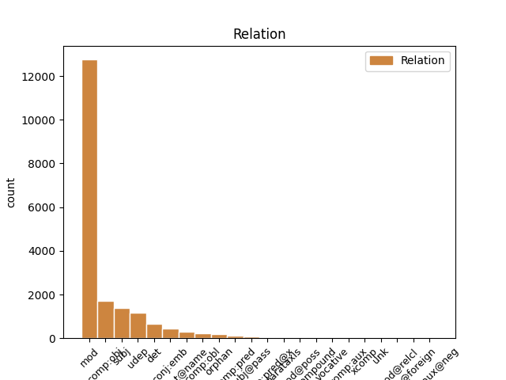
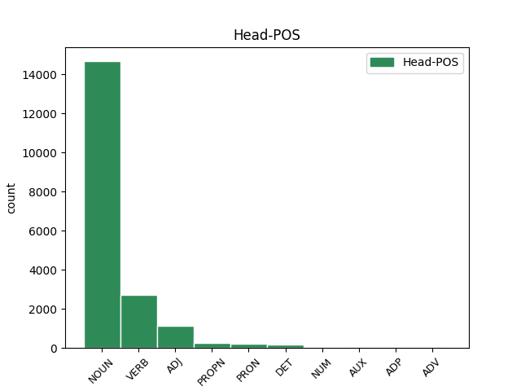
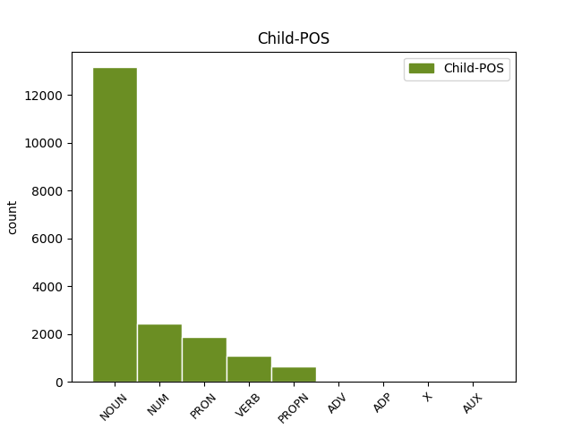

Distribution of features within this leaf



Agreement Rules sorted by frequency.
- When the dependent token is the modifer(mod) of the head token, and the dependent token is NOUN.
1 Wed _ _ _ _ 0 _ _ _
2 , _ _ _ _ 0 _ _ _
3 13 _ _ _ _ 0 _ _ _
4 Aug _ _ _ _ 0 _ _ _
5 2014 _ _ _ _ 0 _ _ _
6 12:07:05 _ _ _ _ 0 _ _ _
7 BST _ _ _ _ 0 _ _ _
8 av _ _ _ _ 0 _ _ _
9 Vagn _ _ _ _ 0 _ _ _
10 , _ _ _ _ 0 _ _ _
11 83843 _ _ _ _ 0 _ _ _
12 ferðir _ _ _ _ 0 _ _ _
13 sætt _ _ _ _ 0 _ _ _
14 Farið _ _ _ _ 0 _ _ _
15 verður _ _ _ _ 0 _ _ _
16 í _ _ _ _ 0 _ _ _
17 skúla _ _ _ _ 0 _ _ _
18 mánadagin mánadaga NOUN _ Case=Dat|Gender=Masc|Number=Sing 0 _ _ _
19 18 _ _ _ _ 0 _ _ _
20 . _ _ _ _ 0 _ _ _
21 august august NOUN _ Definite=Ind|Gender=Masc|Number=Sing 18 mod _ _
22 . _ _ _ _ 0 _ _ _
1 Tað _ _ _ _ 0 _ _ _
2 kundi _ _ _ _ 0 _ _ _
3 eg _ _ _ _ 0 _ _ _
4 siga _ _ _ _ 0 _ _ _
5 út _ _ _ _ 0 _ _ _
6 frá _ _ _ _ 0 _ _ _
7 orðunum _ _ _ _ 0 _ _ _
8 í _ _ _ _ 0 _ _ _
9 1 _ _ _ _ 0 _ _ _
10 . _ _ _ _ 0 _ _ _
11 Pæt _ _ _ _ 0 _ _ _
12 . _ _ _ _ 0 _ _ _
13 3,9 _ _ _ _ 0 _ _ _
14 - _ _ _ _ 0 _ _ _
15 10 _ _ _ _ 0 _ _ _
16 : _ _ _ _ 0 _ _ _
17 ” _ _ _ _ 0 _ _ _
18 Gjaldið _ _ _ _ 0 _ _ _
19 ikki _ _ _ _ 0 _ _ _
20 ilt ilt NOUN _ Case=Acc|Gender=Neut|Number=Sing 0 _ _ _
21 fyri fyri NUM _ Case=Acc|Gender=Neut|Number=Sing 20 mod _ _
22 ilt _ _ _ _ 0 _ _ _
23 ella _ _ _ _ 0 _ _ _
24 deilan _ _ _ _ 0 _ _ _
25 fyri _ _ _ _ 0 _ _ _
26 deilan _ _ _ _ 0 _ _ _
27 ; _ _ _ _ 0 _ _ _
28 men _ _ _ _ 0 _ _ _
29 tvørtur _ _ _ _ 0 _ _ _
30 ímót _ _ _ _ 0 _ _ _
31 , _ _ _ _ 0 _ _ _
32 vælsignið _ _ _ _ 0 _ _ _
33 heldur _ _ _ _ 0 _ _ _
34 , _ _ _ _ 0 _ _ _
35 tí _ _ _ _ 0 _ _ _
36 at _ _ _ _ 0 _ _ _
37 til _ _ _ _ 0 _ _ _
38 tess _ _ _ _ 0 _ _ _
39 eru _ _ _ _ 0 _ _ _
40 tit _ _ _ _ 0 _ _ _
41 kallaðir _ _ _ _ 0 _ _ _
42 , _ _ _ _ 0 _ _ _
43 at _ _ _ _ 0 _ _ _
44 tit _ _ _ _ 0 _ _ _
45 skulu _ _ _ _ 0 _ _ _
46 arva _ _ _ _ 0 _ _ _
47 signing _ _ _ _ 0 _ _ _
48 . _ _ _ _ 0 _ _ _
1 Eg _ _ _ _ 0 _ _ _
2 eri _ _ _ _ 0 _ _ _
3 37 _ _ _ _ 0 _ _ _
4 ár _ _ _ _ 0 _ _ _
5 og _ _ _ _ 0 _ _ _
6 elsti elsti NOUN _ Case=Nom|Gender=Fem|Number=Sing 0 _ _ _
7 pakkarin _ _ _ _ 0 _ _ _
8 umborð umborð NOUN _ Case=Acc|Gender=Fem|Number=Sing 6 comp:obj _ _
9 , _ _ _ _ 0 _ _ _
10 so _ _ _ _ 0 _ _ _
11 sum _ _ _ _ 0 _ _ _
12 heild _ _ _ _ 0 _ _ _
13 er _ _ _ _ 0 _ _ _
14 talan _ _ _ _ 0 _ _ _
15 um _ _ _ _ 0 _ _ _
16 ungt _ _ _ _ 0 _ _ _
17 fólk _ _ _ _ 0 _ _ _
18 . _ _ _ _ 0 _ _ _
1 38 _ _ _ _ 0 _ _ _
2 ) _ _ _ _ 0 _ _ _
3 Innaneftirlit _ _ _ _ 0 _ _ _
4 : _ _ _ _ 0 _ _ _
5 Skipað _ _ _ _ 0 _ _ _
6 tiltøk _ _ _ _ 0 _ _ _
7 , _ _ _ _ 0 _ _ _
8 sum _ _ _ _ 0 _ _ _
9 skulu _ _ _ _ 0 _ _ _
10 tryggja _ _ _ _ 0 _ _ _
11 , _ _ _ _ 0 _ _ _
12 at _ _ _ _ 0 _ _ _
13 virksemið virksemið NOUN _ Case=Nom|Gender=Neut|Number=Sing 17 subj _ _
14 á _ _ _ _ 0 _ _ _
15 alibrúkinum _ _ _ _ 0 _ _ _
16 verður _ _ _ _ 0 _ _ _
17 lagt leggje VERB _ Definite=Ind|Gender=Neut|Number=Sing|VerbForm=Part 0 _ _ _
18 til _ _ _ _ 0 _ _ _
19 rættis _ _ _ _ 0 _ _ _
20 , _ _ _ _ 0 _ _ _
21 skipað _ _ _ _ 0 _ _ _
22 , _ _ _ _ 0 _ _ _
23 útint _ _ _ _ 0 _ _ _
24 og _ _ _ _ 0 _ _ _
25 viðlíkahildið _ _ _ _ 0 _ _ _
26 í _ _ _ _ 0 _ _ _
27 samsvari _ _ _ _ 0 _ _ _
28 við _ _ _ _ 0 _ _ _
29 galdandi _ _ _ _ 0 _ _ _
30 lóg _ _ _ _ 0 _ _ _
31 ella _ _ _ _ 0 _ _ _
32 við _ _ _ _ 0 _ _ _
33 krøv _ _ _ _ 0 _ _ _
34 , _ _ _ _ 0 _ _ _
35 heimilað _ _ _ _ 0 _ _ _
36 í _ _ _ _ 0 _ _ _
37 galdandi _ _ _ _ 0 _ _ _
38 lóg _ _ _ _ 0 _ _ _
39 . _ _ _ _ 0 _ _ _
1 Gera _ _ _ _ 0 _ _ _
2 miðvíst _ _ _ _ 0 _ _ _
3 fyribyrgjandi _ _ _ _ 0 _ _ _
4 arbeiði _ _ _ _ 0 _ _ _
5 Annar _ _ _ _ 0 _ _ _
6 týðandi _ _ _ _ 0 _ _ _
7 partur _ _ _ _ 0 _ _ _
8 av _ _ _ _ 0 _ _ _
9 arbeiðinum _ _ _ _ 0 _ _ _
10 í _ _ _ _ 0 _ _ _
11 felagnum _ _ _ _ 0 _ _ _
12 er _ _ _ _ 0 _ _ _
13 fyribyrgjandi fyribyrgja VERB _ Case=Nom|Gender=Fem|Number=Sing|Strength=Weak|Tense=Pres|VerbForm=Part|Voice=Act 14 mod _ _
14 arbeiði arbeiði NOUN _ Case=Nom|Gender=Fem|Number=Sing 0 _ _ _
15 . _ _ _ _ 0 _ _ _
1 Hósdagur _ _ _ _ 0 _ _ _
2 , _ _ _ _ 0 _ _ _
3 27 _ _ _ _ 0 _ _ _
4 . _ _ _ _ 0 _ _ _
5 oktober _ _ _ _ 0 _ _ _
6 2011 _ _ _ _ 0 _ _ _
7 20:54 _ _ _ _ 0 _ _ _
8 Jonas _ _ _ _ 0 _ _ _
9 Flindt _ _ _ _ 0 _ _ _
10 Rasmussen _ _ _ _ 0 _ _ _
11 og _ _ _ _ 0 _ _ _
12 B36 _ _ _ _ 0 _ _ _
13 skrivaðu _ _ _ _ 0 _ _ _
14 leygardagin _ _ _ _ 0 _ _ _
15 undir _ _ _ _ 0 _ _ _
16 nýggjan _ _ _ _ 0 _ _ _
17 sáttmála _ _ _ _ 0 _ _ _
18 fyri _ _ _ _ 0 _ _ _
19 komandi _ _ _ _ 0 _ _ _
20 kappingarár _ _ _ _ 0 _ _ _
21 Eingin _ _ _ _ 0 _ _ _
22 ivi _ _ _ _ 0 _ _ _
23 er _ _ _ _ 0 _ _ _
24 um _ _ _ _ 0 _ _ _
25 , _ _ _ _ 0 _ _ _
26 at _ _ _ _ 0 _ _ _
27 Jonas _ _ _ _ 0 _ _ _
28 hevur _ _ _ _ 0 _ _ _
29 átt átt NUM _ Case=Acc|Gender=Neut|Number=Sing 0 _ _ _
30 sín sín PRON _ Case=Acc|Degree=Pos|Gender=Neut|Number=Sing|Strength=Strong 29 mod _ _
31 stóra _ _ _ _ 0 _ _ _
32 leiklut _ _ _ _ 0 _ _ _
33 í _ _ _ _ 0 _ _ _
34 góðu _ _ _ _ 0 _ _ _
35 avrikunum _ _ _ _ 0 _ _ _
36 hjá _ _ _ _ 0 _ _ _
37 okkara _ _ _ _ 0 _ _ _
38 monnum _ _ _ _ 0 _ _ _
39 í _ _ _ _ 0 _ _ _
40 ár _ _ _ _ 0 _ _ _
41 . _ _ _ _ 0 _ _ _
1 Tað _ _ _ _ 0 _ _ _
2 kundi _ _ _ _ 0 _ _ _
3 eg _ _ _ _ 0 _ _ _
4 siga _ _ _ _ 0 _ _ _
5 út _ _ _ _ 0 _ _ _
6 frá _ _ _ _ 0 _ _ _
7 orðunum _ _ _ _ 0 _ _ _
8 í _ _ _ _ 0 _ _ _
9 1 _ _ _ _ 0 _ _ _
10 . _ _ _ _ 0 _ _ _
11 Pæt _ _ _ _ 0 _ _ _
12 . _ _ _ _ 0 _ _ _
13 3,9 _ _ _ _ 0 _ _ _
14 - _ _ _ _ 0 _ _ _
15 10 _ _ _ _ 0 _ _ _
16 : _ _ _ _ 0 _ _ _
17 ” _ _ _ _ 0 _ _ _
18 Gjaldið gjaldan VERB _ Aspect=Perf|Case=Nom|Gender=Neut|Number=Sing|Strength=Strong|Tense=Past|VerbForm=Part|Voice=Pass 0 _ _ _
19 ikki _ _ _ _ 0 _ _ _
20 ilt _ _ _ _ 0 _ _ _
21 fyri _ _ _ _ 0 _ _ _
22 ilt ilt NOUN _ Case=Acc|Gender=Neut|Number=Sing 18 udep _ _
23 ella _ _ _ _ 0 _ _ _
24 deilan _ _ _ _ 0 _ _ _
25 fyri _ _ _ _ 0 _ _ _
26 deilan _ _ _ _ 0 _ _ _
27 ; _ _ _ _ 0 _ _ _
28 men _ _ _ _ 0 _ _ _
29 tvørtur _ _ _ _ 0 _ _ _
30 ímót _ _ _ _ 0 _ _ _
31 , _ _ _ _ 0 _ _ _
32 vælsignið _ _ _ _ 0 _ _ _
33 heldur _ _ _ _ 0 _ _ _
34 , _ _ _ _ 0 _ _ _
35 tí _ _ _ _ 0 _ _ _
36 at _ _ _ _ 0 _ _ _
37 til _ _ _ _ 0 _ _ _
38 tess _ _ _ _ 0 _ _ _
39 eru _ _ _ _ 0 _ _ _
40 tit _ _ _ _ 0 _ _ _
41 kallaðir _ _ _ _ 0 _ _ _
42 , _ _ _ _ 0 _ _ _
43 at _ _ _ _ 0 _ _ _
44 tit _ _ _ _ 0 _ _ _
45 skulu _ _ _ _ 0 _ _ _
46 arva _ _ _ _ 0 _ _ _
47 signing _ _ _ _ 0 _ _ _
48 . _ _ _ _ 0 _ _ _
1 Hevði _ _ _ _ 0 _ _ _
2 hann _ _ _ _ 0 _ _ _
3 annars _ _ _ _ 0 _ _ _
4 akt _ _ _ _ 0 _ _ _
5 , _ _ _ _ 0 _ _ _
6 sum sums PRON _ Case=Nom|Gender=Masc|Number=Sing 7 det _ _
7 hann hann PRON _ Case=Nom|Gender=Masc|Number=Sing|Person=3|PronType=Prs 0 _ _ _
8 hevur _ _ _ _ 0 _ _ _
9 makt _ _ _ _ 0 _ _ _
10 , _ _ _ _ 0 _ _ _
11 - _ _ _ _ 0 _ _ _
12 hann _ _ _ _ 0 _ _ _
13 situr _ _ _ _ 0 _ _ _
14 jú _ _ _ _ 0 _ _ _
15 við _ _ _ _ 0 _ _ _
16 fíggjarmálum _ _ _ _ 0 _ _ _
17 ! _ _ _ _ 0 _ _ _
1 Hetta _ _ _ _ 0 _ _ _
2 er _ _ _ _ 0 _ _ _
3 ein _ _ _ _ 0 _ _ _
4 tvey _ _ _ _ 0 _ _ _
5 ára _ _ _ _ 0 _ _ _
6 útbúgving _ _ _ _ 0 _ _ _
7 , _ _ _ _ 0 _ _ _
8 sum _ _ _ _ 0 _ _ _
9 er _ _ _ _ 0 _ _ _
10 býtt _ _ _ _ 0 _ _ _
11 upp _ _ _ _ 0 _ _ _
12 í _ _ _ _ 0 _ _ _
13 fýra _ _ _ _ 0 _ _ _
14 semestur _ _ _ _ 0 _ _ _
15 , _ _ _ _ 0 _ _ _
16 har _ _ _ _ 0 _ _ _
17 møguleiki _ _ _ _ 0 _ _ _
18 er _ _ _ _ 0 _ _ _
19 at _ _ _ _ 0 _ _ _
20 nema _ _ _ _ 0 _ _ _
21 sær _ _ _ _ 0 _ _ _
22 kunnleika _ _ _ _ 0 _ _ _
23 í _ _ _ _ 0 _ _ _
24 uppmáting _ _ _ _ 0 _ _ _
25 , _ _ _ _ 0 _ _ _
26 viðgerð _ _ _ _ 0 _ _ _
27 av _ _ _ _ 0 _ _ _
28 uppmátingardáta _ _ _ _ 0 _ _ _
29 , _ _ _ _ 0 _ _ _
30 og _ _ _ _ 0 _ _ _
31 fyriskipan fyriskipan NOUN _ Definite=Ind|Gender=Fem|Number=Sing 0 _ _ _
32 og _ _ _ _ 0 _ _ _
33 stýring stýring NOUN _ Definite=Ind|Gender=Fem|Number=Sing 31 conj:emb _ _
34 av _ _ _ _ 0 _ _ _
35 byggiprojektum _ _ _ _ 0 _ _ _
36 . _ _ _ _ 0 _ _ _
1 Jóhan Jóhan PROPN _ Case=Nom|Gender=Masc|Number=Sing 0 _ _ _
2 Páll páll PROPN _ Gender=Masc 1 flat@name _ _
3 Joensen _ _ _ _ 0 _ _ _
4 , _ _ _ _ 0 _ _ _
5 stjóri _ _ _ _ 0 _ _ _
6 , _ _ _ _ 0 _ _ _
7 sigur _ _ _ _ 0 _ _ _
8 við _ _ _ _ 0 _ _ _
9 Portalin _ _ _ _ 0 _ _ _
10 í _ _ _ _ 0 _ _ _
11 gjár _ _ _ _ 0 _ _ _
12 , _ _ _ _ 0 _ _ _
13 at _ _ _ _ 0 _ _ _
14 framleiðslan _ _ _ _ 0 _ _ _
15 á _ _ _ _ 0 _ _ _
16 virkinum _ _ _ _ 0 _ _ _
17 byrjar _ _ _ _ 0 _ _ _
18 væntandi _ _ _ _ 0 _ _ _
19 8 _ _ _ _ 0 _ _ _
20 . _ _ _ _ 0 _ _ _
21 august _ _ _ _ 0 _ _ _
22 . _ _ _ _ 0 _ _ _
1 So _ _ _ _ 0 _ _ _
2 tá _ _ _ _ 0 _ _ _
3 ið _ _ _ _ 0 _ _ _
4 eg _ _ _ _ 0 _ _ _
5 kom _ _ _ _ 0 _ _ _
6 á _ _ _ _ 0 _ _ _
7 møti _ _ _ _ 0 _ _ _
8 eina _ _ _ _ 0 _ _ _
9 viku _ _ _ _ 0 _ _ _
10 aftaná _ _ _ _ 0 _ _ _
11 knekkaði _ _ _ _ 0 _ _ _
12 eg _ _ _ _ 0 _ _ _
13 framman _ _ _ _ 0 _ _ _
14 fyri _ _ _ _ 0 _ _ _
15 Guds Gud PROPN _ Case=Gen|Gender=Masc|Number=Sing 16 mod _ _
16 ásjón ásjón NOUN _ Case=Acc|Gender=Masc|Number=Sing 0 _ _ _
17 , _ _ _ _ 0 _ _ _
18 og _ _ _ _ 0 _ _ _
19 eg _ _ _ _ 0 _ _ _
20 sá _ _ _ _ 0 _ _ _
21 , _ _ _ _ 0 _ _ _
22 at _ _ _ _ 0 _ _ _
23 eg _ _ _ _ 0 _ _ _
24 ikki _ _ _ _ 0 _ _ _
25 kundi _ _ _ _ 0 _ _ _
26 blíva _ _ _ _ 0 _ _ _
27 við _ _ _ _ 0 _ _ _
28 at _ _ _ _ 0 _ _ _
29 liva _ _ _ _ 0 _ _ _
30 , _ _ _ _ 0 _ _ _
31 sum _ _ _ _ 0 _ _ _
32 eg _ _ _ _ 0 _ _ _
33 gjørdi _ _ _ _ 0 _ _ _
34 . _ _ _ _ 0 _ _ _
1 Tað _ _ _ _ 0 _ _ _
2 eru _ _ _ _ 0 _ _ _
3 hesi _ _ _ _ 0 _ _ _
4 hagtøl _ _ _ _ 0 _ _ _
5 , _ _ _ _ 0 _ _ _
6 sum sum PRON _ Case=Nom|Gender=Neut|Number=Sing 7 subj _ _
7 ætlanin ætlani ADJ _ Case=Nom|Gender=Neut|Number=Sing 0 _ _ _
8 er _ _ _ _ 0 _ _ _
9 at _ _ _ _ 0 _ _ _
10 samskipa _ _ _ _ 0 _ _ _
11 í _ _ _ _ 0 _ _ _
12 eina _ _ _ _ 0 _ _ _
13 databasu _ _ _ _ 0 _ _ _
14 , _ _ _ _ 0 _ _ _
15 sum _ _ _ _ 0 _ _ _
16 verður _ _ _ _ 0 _ _ _
17 gjørd _ _ _ _ 0 _ _ _
18 á _ _ _ _ 0 _ _ _
19 Náttúruvísindadeildini _ _ _ _ 0 _ _ _
20 og _ _ _ _ 0 _ _ _
21 skal _ _ _ _ 0 _ _ _
22 verða _ _ _ _ 0 _ _ _
23 tøk _ _ _ _ 0 _ _ _
24 hjá _ _ _ _ 0 _ _ _
25 einum _ _ _ _ 0 _ _ _
26 og _ _ _ _ 0 _ _ _
27 hvørjum _ _ _ _ 0 _ _ _
28 , _ _ _ _ 0 _ _ _
29 sum _ _ _ _ 0 _ _ _
30 hevur _ _ _ _ 0 _ _ _
31 áhugað _ _ _ _ 0 _ _ _
32 fyri _ _ _ _ 0 _ _ _
33 haruveiðu _ _ _ _ 0 _ _ _
34 . _ _ _ _ 0 _ _ _
1 Les _ _ _ _ 0 _ _ _
2 meira _ _ _ _ 0 _ _ _
3 Okkara _ _ _ _ 0 _ _ _
4 meinigheid _ _ _ _ 0 _ _ _
5 hevur _ _ _ _ 0 _ _ _
6 fingið _ _ _ _ 0 _ _ _
7 heilsan _ _ _ _ 0 _ _ _
8 frá _ _ _ _ 0 _ _ _
9 Hans Hans NOUN _ Gender=Masc 0 _ _ _
10 Karl Karl NOUN _ Gender=Masc 9 flat@name _ _
11 , _ _ _ _ 0 _ _ _
12 sum _ _ _ _ 0 _ _ _
13 er _ _ _ _ 0 _ _ _
14 staddur _ _ _ _ 0 _ _ _
15 í _ _ _ _ 0 _ _ _
16 Tanzania _ _ _ _ 0 _ _ _
17 , _ _ _ _ 0 _ _ _
18 har _ _ _ _ 0 _ _ _
19 hann _ _ _ _ 0 _ _ _
20 virkar _ _ _ _ 0 _ _ _
21 sum _ _ _ _ 0 _ _ _
22 lærari _ _ _ _ 0 _ _ _
23 . _ _ _ _ 0 _ _ _
1 Og _ _ _ _ 0 _ _ _
2 um _ _ _ _ 0 _ _ _
3 eg _ _ _ _ 0 _ _ _
4 minnist _ _ _ _ 0 _ _ _
5 rætt _ _ _ _ 0 _ _ _
6 , _ _ _ _ 0 _ _ _
7 so _ _ _ _ 0 _ _ _
8 komu komun VERB _ Case=Nom|Gender=Fem|Number=Sing 0 _ _ _
9 rakstrarpartar rakstrarpartar NOUN _ Case=Nom|Gender=Fem|Number=Sing 8 comp:pred _ _
10 við _ _ _ _ 0 _ _ _
11 í _ _ _ _ 0 _ _ _
12 skipanina _ _ _ _ 0 _ _ _
13 tá _ _ _ _ 0 _ _ _
14 . _ _ _ _ 0 _ _ _
1 Vaksin _ _ _ _ 0 _ _ _
2 kvinnur _ _ _ _ 0 _ _ _
3 og _ _ _ _ 0 _ _ _
4 menn mann NOUN _ Definite=Ind|Gender=Masc|Number=Plur 0 _ _ _
5 opin _ _ _ _ 0 _ _ _
6 bólkur bólkur NOUN _ Definite=Ind|Gender=Masc|Number=Sing 4 orphan _ _
7 ( _ _ _ _ 0 _ _ _
8 f. _ _ _ _ 0 _ _ _
9 1995 _ _ _ _ 0 _ _ _
10 ella _ _ _ _ 0 _ _ _
11 fyrr _ _ _ _ 0 _ _ _
12 ) _ _ _ _ 0 _ _ _
13 – _ _ _ _ 0 _ _ _
14 10,6 _ _ _ _ 0 _ _ _
15 km _ _ _ _ 0 _ _ _
16 Vetaranar _ _ _ _ 0 _ _ _
17 kvinnur _ _ _ _ 0 _ _ _
18 og _ _ _ _ 0 _ _ _
19 menn _ _ _ _ 0 _ _ _
20 ( _ _ _ _ 0 _ _ _
21 f. _ _ _ _ 0 _ _ _
22 1957 _ _ _ _ 0 _ _ _
23 - _ _ _ _ 0 _ _ _
24 66 _ _ _ _ 0 _ _ _
25 ) _ _ _ _ 0 _ _ _
26 – _ _ _ _ 0 _ _ _
27 10,6 _ _ _ _ 0 _ _ _
28 km _ _ _ _ 0 _ _ _
29 . _ _ _ _ 0 _ _ _
1 Avrit _ _ _ _ 0 _ _ _
2 kann _ _ _ _ 0 _ _ _
3 eisini _ _ _ _ 0 _ _ _
4 verða _ _ _ _ 0 _ _ _
5 sent _ _ _ _ 0 _ _ _
6 eini _ _ _ _ 0 _ _ _
7 kommunalari _ _ _ _ 0 _ _ _
8 skattakærunevnd _ _ _ _ 0 _ _ _
9 , _ _ _ _ 0 _ _ _
10 um _ _ _ _ 0 _ _ _
11 henda _ _ _ _ 0 _ _ _
12 nevnd _ _ _ _ 0 _ _ _
13 hevur _ _ _ _ 0 _ _ _
14 tikið tikið VERB _ Aspect=Perf|Case=Nom|Gender=Neut|Number=Sing|Strength=Strong|Tense=Past|VerbForm=Part|Voice=Pass 0 _ _ _
15 avgerð avgerð VERB _ Aspect=Perf|Case=Nom|Gender=Neut|Number=Sing|Strength=Strong|Tense=Past|VerbForm=Part|Voice=Pass 14 comp:pred@x _ _
16 í _ _ _ _ 0 _ _ _
17 málinum _ _ _ _ 0 _ _ _
18 . _ _ _ _ 0 _ _ _
1 Og _ _ _ _ 0 _ _ _
2 myndir _ _ _ _ 0 _ _ _
3 eru _ _ _ _ 0 _ _ _
4 í _ _ _ _ 0 _ _ _
5 myndasavninum _ _ _ _ 0 _ _ _
6 . _ _ _ _ 0 _ _ _
7 12.06.07 _ _ _ _ 0 _ _ _
8 kl _ _ _ _ 0 _ _ _
9 . _ _ _ _ 0 _ _ _
10 19:35 _ _ _ _ 0 _ _ _
11 0 _ _ _ _ 0 _ _ _
12 viðmerkingar _ _ _ _ 0 _ _ _
13 Í _ _ _ _ 0 _ _ _
14 gjárkvøldið _ _ _ _ 0 _ _ _
15 varð _ _ _ _ 0 _ _ _
16 skipað skipað ADJ _ Definite=Ind|Gender=Neut|Number=Sing|Shared=Yes|VerbForm=Part 0 _ _ _
17 fyri fyri NOUN _ Definite=Ind|Gender=Neut|Number=Sing 16 subj@pass _ _
18 FM _ _ _ _ 0 _ _ _
19 í _ _ _ _ 0 _ _ _
20 10 _ _ _ _ 0 _ _ _
21 km _ _ _ _ 0 _ _ _
22 renning _ _ _ _ 0 _ _ _
23 á _ _ _ _ 0 _ _ _
24 vegi _ _ _ _ 0 _ _ _
25 . _ _ _ _ 0 _ _ _
1 Eftir _ _ _ _ 0 _ _ _
2 ráðstevnuna _ _ _ _ 0 _ _ _
3 var _ _ _ _ 0 _ _ _
4 ein _ _ _ _ 0 _ _ _
5 munnlig _ _ _ _ 0 _ _ _
6 avtala _ _ _ _ 0 _ _ _
7 gjørd _ _ _ _ 0 _ _ _
8 við _ _ _ _ 0 _ _ _
9 hinar _ _ _ _ 0 _ _ _
10 fyrilestrarhaldararnar _ _ _ _ 0 _ _ _
11 , _ _ _ _ 0 _ _ _
12 at _ _ _ _ 0 _ _ _
13 hesir _ _ _ _ 0 _ _ _
14 framyvir _ _ _ _ 0 _ _ _
15 fara _ _ _ _ 0 _ _ _
16 at _ _ _ _ 0 _ _ _
17 samskifta _ _ _ _ 0 _ _ _
18 sínamillum _ _ _ _ 0 _ _ _
19 , _ _ _ _ 0 _ _ _
20 hvussu _ _ _ _ 0 _ _ _
21 reint rein ADV _ Definite=Ind|Degree=Pos|Gender=Neut|Number=Sing 22 mod _ _
22 tekniskt teknisk ADJ _ Definite=Ind|Degree=Pos|Gender=Neut|Number=Sing 0 _ _ _
23 ymisku _ _ _ _ 0 _ _ _
24 oyggjarnar _ _ _ _ 0 _ _ _
25 fara _ _ _ _ 0 _ _ _
26 at _ _ _ _ 0 _ _ _
27 loysa _ _ _ _ 0 _ _ _
28 ta _ _ _ _ 0 _ _ _
29 stóru _ _ _ _ 0 _ _ _
30 avbjóðing _ _ _ _ 0 _ _ _
31 , _ _ _ _ 0 _ _ _
32 at _ _ _ _ 0 _ _ _
33 flyta _ _ _ _ 0 _ _ _
34 frá _ _ _ _ 0 _ _ _
35 fossilari _ _ _ _ 0 _ _ _
36 orku _ _ _ _ 0 _ _ _
37 til _ _ _ _ 0 _ _ _
38 varandi _ _ _ _ 0 _ _ _
39 orkukeldur _ _ _ _ 0 _ _ _
40 . _ _ _ _ 0 _ _ _
1 Men _ _ _ _ 0 _ _ _
2 posturin _ _ _ _ 0 _ _ _
3 má _ _ _ _ 0 _ _ _
4 altso _ _ _ _ 0 _ _ _
5 út _ _ _ _ 0 _ _ _
6 Annfinnur _ _ _ _ 0 _ _ _
7 : _ _ _ _ 0 _ _ _
8 - _ _ _ _ 0 _ _ _
9 Er _ _ _ _ 0 _ _ _
10 ein _ _ _ _ 0 _ _ _
11 løta _ _ _ _ 0 _ _ _
12 , _ _ _ _ 0 _ _ _
13 so _ _ _ _ 0 _ _ _
14 fari _ _ _ _ 0 _ _ _
15 eg _ _ _ _ 0 _ _ _
16 oman _ _ _ _ 0 _ _ _
17 í _ _ _ _ 0 _ _ _
18 bátin _ _ _ _ 0 _ _ _
19 Dalbingar _ _ _ _ 0 _ _ _
20 bíða _ _ _ _ 0 _ _ _
21 framvegis _ _ _ _ 0 _ _ _
22 eftir _ _ _ _ 0 _ _ _
23 tunlinum _ _ _ _ 0 _ _ _
24 Tað _ _ _ _ 0 _ _ _
25 var _ _ _ _ 0 _ _ _
26 tann _ _ _ _ 0 _ _ _
27 tíð _ _ _ _ 0 _ _ _
28 , _ _ _ _ 0 _ _ _
29 tá _ _ _ _ 0 _ _ _
30 tað _ _ _ _ 0 _ _ _
31 búðu _ _ _ _ 0 _ _ _
32 rættiliga _ _ _ _ 0 _ _ _
33 nógv _ _ _ _ 0 _ _ _
34 fólk _ _ _ _ 0 _ _ _
35 í _ _ _ _ 0 _ _ _
36 eini eini NUM _ Case=Nom|Gender=Fem|Number=Sing 41 det _ _
37 so _ _ _ _ 0 _ _ _
38 lítlari _ _ _ _ 0 _ _ _
39 og _ _ _ _ 0 _ _ _
40 fjarskotnari _ _ _ _ 0 _ _ _
41 bygd bygd NOUN _ Case=Nom|Gender=Fem|Number=Sing 0 _ _ _
42 sum _ _ _ _ 0 _ _ _
43 Dalur _ _ _ _ 0 _ _ _
44 . _ _ _ _ 0 _ _ _
1 Ásetanir _ _ _ _ 0 _ _ _
2 í _ _ _ _ 0 _ _ _
3 tryggingartreytunum _ _ _ _ 0 _ _ _
4 , _ _ _ _ 0 _ _ _
5 ið _ _ _ _ 0 _ _ _
6 geva _ _ _ _ 0 _ _ _
7 tí _ _ _ _ 0 _ _ _
8 tryggjaða _ _ _ _ 0 _ _ _
9 størri _ _ _ _ 0 _ _ _
10 rættindi _ _ _ _ 0 _ _ _
11 enn _ _ _ _ 0 _ _ _
12 tilsvarandi _ _ _ _ 0 _ _ _
13 ásetanir _ _ _ _ 0 _ _ _
14 , _ _ _ _ 0 _ _ _
15 ið _ _ _ _ 0 _ _ _
16 við _ _ _ _ 0 _ _ _
17 broyting _ _ _ _ 0 _ _ _
18 av _ _ _ _ 0 _ _ _
19 treytunum _ _ _ _ 0 _ _ _
20 vera _ _ _ _ 0 _ _ _
21 galdandi _ _ _ _ 0 _ _ _
22 í _ _ _ _ 0 _ _ _
23 framtíðini _ _ _ _ 0 _ _ _
24 , _ _ _ _ 0 _ _ _
25 verða _ _ _ _ 0 _ _ _
26 støðugt _ _ _ _ 0 _ _ _
27 í _ _ _ _ 0 _ _ _
28 gildi _ _ _ _ 0 _ _ _
29 viðvíkjandi viðvíkja VERB _ Case=Nom|Gender=Fem|Number=Sing|Strength=Weak|Tense=Pres|VerbForm=Part|Voice=Act 0 _ _ _
30 tryggingum trygging NOUN _ Case=Dat|Gender=Fem|Number=Plur 29 comp:obl _ _
31 , _ _ _ _ 0 _ _ _
32 ið _ _ _ _ 0 _ _ _
33 eru _ _ _ _ 0 _ _ _
34 teknaðar _ _ _ _ 0 _ _ _
35 , _ _ _ _ 0 _ _ _
36 áðrenn _ _ _ _ 0 _ _ _
37 broytingin _ _ _ _ 0 _ _ _
38 kom _ _ _ _ 0 _ _ _
39 í _ _ _ _ 0 _ _ _
40 . _ _ _ _ 0 _ _ _
41 4 _ _ _ _ 0 _ _ _
42 . _ _ _ _ 0 _ _ _
43 stk _ _ _ _ 0 _ _ _
44 . _ _ _ _ 0 _ _ _
1 Tá _ _ _ _ 0 _ _ _
2 fara _ _ _ _ 0 _ _ _
3 vit _ _ _ _ 0 _ _ _
4 at _ _ _ _ 0 _ _ _
5 geva _ _ _ _ 0 _ _ _
6 teimum _ _ _ _ 0 _ _ _
7 uml _ _ _ _ 0 _ _ _
8 . _ _ _ _ 0 _ _ _
9 130 _ _ _ _ 0 _ _ _
10 føroysku _ _ _ _ 0 _ _ _
11 ungdómunum _ _ _ _ 0 _ _ _
12 , _ _ _ _ 0 _ _ _
13 sum sum NOUN _ Case=Acc|Gender=Neut|Number=Sing 16 det _ _
14 á _ _ _ _ 0 _ _ _
15 hvørjum _ _ _ _ 0 _ _ _
16 ári ári NOUN _ Case=Dat|Gender=Neut|Number=Sing 0 _ _ _
17 fara _ _ _ _ 0 _ _ _
18 á _ _ _ _ 0 _ _ _
19 eftirskúla _ _ _ _ 0 _ _ _
20 í _ _ _ _ 0 _ _ _
21 Danmark _ _ _ _ 0 _ _ _
22 , _ _ _ _ 0 _ _ _
23 eitt _ _ _ _ 0 _ _ _
24 spennandi _ _ _ _ 0 _ _ _
25 og _ _ _ _ 0 _ _ _
26 mennandi _ _ _ _ 0 _ _ _
27 eftirskúla _ _ _ _ 0 _ _ _
28 tilboð _ _ _ _ 0 _ _ _
29 heima _ _ _ _ 0 _ _ _
30 hjá _ _ _ _ 0 _ _ _
31 okkum _ _ _ _ 0 _ _ _
32 sjálvum _ _ _ _ 0 _ _ _
33 . _ _ _ _ 0 _ _ _
1 Landsstýrismaðurin _ _ _ _ 0 _ _ _
2 heldur _ _ _ _ 0 _ _ _
3 tó _ _ _ _ 0 _ _ _
4 , _ _ _ _ 0 _ _ _
5 at _ _ _ _ 0 _ _ _
6 vit _ _ _ _ 0 _ _ _
7 flest _ _ _ _ 0 _ _ _
8 øll _ _ _ _ 0 _ _ _
9 eru _ _ _ _ 0 _ _ _
10 á _ _ _ _ 0 _ _ _
11 einum _ _ _ _ 0 _ _ _
12 máli _ _ _ _ 0 _ _ _
13 um _ _ _ _ 0 _ _ _
14 at _ _ _ _ 0 _ _ _
15 vit _ _ _ _ 0 _ _ _
16 í _ _ _ _ 0 _ _ _
17 Føroyum _ _ _ _ 0 _ _ _
18 hava _ _ _ _ 0 _ _ _
19 eitt _ _ _ _ 0 _ _ _
20 sera _ _ _ _ 0 _ _ _
21 gott _ _ _ _ 0 _ _ _
22 ferðasamband _ _ _ _ 0 _ _ _
23 og _ _ _ _ 0 _ _ _
24 at _ _ _ _ 0 _ _ _
25 sambandi _ _ _ _ 0 _ _ _
26 millum millu PRON _ Case=Dat|Gender=Masc|Number=Plur 28 udep _ _
27 flestu _ _ _ _ 0 _ _ _
28 oyggjar oyggjar ADJ _ Definite=Ind|Gender=Masc|Number=Plur 0 _ _ _
29 er _ _ _ _ 0 _ _ _
30 við _ _ _ _ 0 _ _ _
31 høgum _ _ _ _ 0 _ _ _
32 títtleika _ _ _ _ 0 _ _ _
33 og _ _ _ _ 0 _ _ _
34 til _ _ _ _ 0 _ _ _
35 ein _ _ _ _ 0 _ _ _
36 rímiligan _ _ _ _ 0 _ _ _
37 kostnað _ _ _ _ 0 _ _ _
38 . _ _ _ _ 0 _ _ _
1 Á _ _ _ _ 0 _ _ _
2 myndini _ _ _ _ 0 _ _ _
3 omanfyri _ _ _ _ 0 _ _ _
4 sást _ _ _ _ 0 _ _ _
5 John _ _ _ _ 0 _ _ _
6 við _ _ _ _ 0 _ _ _
7 tveimum _ _ _ _ 0 _ _ _
8 av _ _ _ _ 0 _ _ _
9 sínum sínu PRON _ Case=Dat|Gender=Masc|Number=Plur|Poss=Yes 11 mod@poss _ _
10 kendastu _ _ _ _ 0 _ _ _
11 rennarum renna NOUN _ Case=Dat|Gender=Masc|Number=Plur 0 _ _ _
12 . _ _ _ _ 0 _ _ _
1 Tí _ _ _ _ 0 _ _ _
2 eiga _ _ _ _ 0 _ _ _
3 heilsurøktarar _ _ _ _ 0 _ _ _
4 at _ _ _ _ 0 _ _ _
5 arbeiða _ _ _ _ 0 _ _ _
6 á _ _ _ _ 0 _ _ _
7 øllum _ _ _ _ 0 _ _ _
8 deildum _ _ _ _ 0 _ _ _
9 á _ _ _ _ 0 _ _ _
10 sjúkrahúsunum _ _ _ _ 0 _ _ _
11 og _ _ _ _ 0 _ _ _
12 sjálvandi sjálva VERB _ Case=Nom|Gender=Fem|Number=Sing|Strength=Weak|Tense=Pres|VerbForm=Part|Voice=Act 0 _ _ _
13 eisini eisis PRON _ Case=Dat|Gender=Fem|Number=Sing 12 comp:obj _ _
14 at _ _ _ _ 0 _ _ _
15 sleppa _ _ _ _ 0 _ _ _
16 at _ _ _ _ 0 _ _ _
17 brúka _ _ _ _ 0 _ _ _
18 sínar _ _ _ _ 0 _ _ _
19 fakligu _ _ _ _ 0 _ _ _
20 førleikar _ _ _ _ 0 _ _ _
21 . _ _ _ _ 0 _ _ _
1 Teir _ _ _ _ 0 _ _ _
2 báðir _ _ _ _ 0 _ _ _
3 Ragnar _ _ _ _ 0 _ _ _
4 Davidsen _ _ _ _ 0 _ _ _
5 og _ _ _ _ 0 _ _ _
6 Sten _ _ _ _ 0 _ _ _
7 Rói _ _ _ _ 0 _ _ _
8 Lorentzen _ _ _ _ 0 _ _ _
9 , _ _ _ _ 0 _ _ _
10 og _ _ _ _ 0 _ _ _
11 aftanfyri _ _ _ _ 0 _ _ _
12 teir _ _ _ _ 0 _ _ _
13 , _ _ _ _ 0 _ _ _
14 við _ _ _ _ 0 _ _ _
15 trummurnar _ _ _ _ 0 _ _ _
16 sat sitje VERB _ Gender=Masc|Number=Sing|Person=3|Tense=Past 0 _ _ _
17 Eyðun Eyðun PROPN _ Gender=Masc 16 subj _ _
18 Múller _ _ _ _ 0 _ _ _
19 . _ _ _ _ 0 _ _ _
1 Á _ _ _ _ 0 _ _ _
2 stovnandi _ _ _ _ 0 _ _ _
3 aðalfundinum _ _ _ _ 0 _ _ _
4 tann _ _ _ _ 0 _ _ _
5 19 _ _ _ _ 0 _ _ _
6 . _ _ _ _ 0 _ _ _
7 mars _ _ _ _ 0 _ _ _
8 2009 _ _ _ _ 0 _ _ _
9 vórðu _ _ _ _ 0 _ _ _
10 hesir _ _ _ _ 0 _ _ _
11 valdir _ _ _ _ 0 _ _ _
12 í _ _ _ _ 0 _ _ _
13 fyrstu _ _ _ _ 0 _ _ _
14 nevnd _ _ _ _ 0 _ _ _
15 felagsins _ _ _ _ 0 _ _ _
16 : _ _ _ _ 0 _ _ _
17 Kristjan _ _ _ _ 0 _ _ _
18 á _ _ _ _ 0 _ _ _
19 Neystabø _ _ _ _ 0 _ _ _
20 , _ _ _ _ 0 _ _ _
21 formaður _ _ _ _ 0 _ _ _
22 , _ _ _ _ 0 _ _ _
23 Kjartan Kjartan NOUN _ Gender=Masc 0 _ _ _
24 Mohr _ _ _ _ 0 _ _ _
25 og _ _ _ _ 0 _ _ _
26 Bárður Bárður PROPN _ Case=Nom|Gender=Masc|Number=Sing 23 conj:emb _ _
27 Simonsen _ _ _ _ 0 _ _ _
28 , _ _ _ _ 0 _ _ _
29 nevndarlimir _ _ _ _ 0 _ _ _
30 . _ _ _ _ 0 _ _ _
1 Eftir _ _ _ _ 0 _ _ _
2 hetta _ _ _ _ 0 _ _ _
3 broytist _ _ _ _ 0 _ _ _
4 gerandisdagurin _ _ _ _ 0 _ _ _
5 hjá _ _ _ _ 0 _ _ _
6 henni _ _ _ _ 0 _ _ _
7 , _ _ _ _ 0 _ _ _
8 alt _ _ _ _ 0 _ _ _
9 verður _ _ _ _ 0 _ _ _
10 so _ _ _ _ 0 _ _ _
11 øðrvísi øðrvísi ADJ _ Case=Nom|Degree=Pos|Gender=Fem|Number=Sing|Strength=Strong 0 _ _ _
12 og _ _ _ _ 0 _ _ _
13 spennandi spenna VERB _ Case=Nom|Gender=Fem|Number=Sing|Strength=Weak|Tense=Pres|VerbForm=Part|Voice=Act 11 conj:emb _ _
14 . _ _ _ _ 0 _ _ _
1 Ætlanin _ _ _ _ 0 _ _ _
2 er _ _ _ _ 0 _ _ _
3 at _ _ _ _ 0 _ _ _
4 fara _ _ _ _ 0 _ _ _
5 at _ _ _ _ 0 _ _ _
6 vitja _ _ _ _ 0 _ _ _
7 eitt _ _ _ _ 0 _ _ _
8 glasblásaríð _ _ _ _ 0 _ _ _
9 á _ _ _ _ 0 _ _ _
10 túrinum _ _ _ _ 0 _ _ _
11 fyri fyri NOUN _ Case=Dat|Gender=Fem|Number=Sing 0 _ _ _
12 eisini eisis PRON _ Case=Dat|Gender=Fem|Number=Sing 11 comp:obl _ _
13 at _ _ _ _ 0 _ _ _
14 uppliva _ _ _ _ 0 _ _ _
15 eina _ _ _ _ 0 _ _ _
16 aðra _ _ _ _ 0 _ _ _
17 síðu _ _ _ _ 0 _ _ _
18 av _ _ _ _ 0 _ _ _
19 Svøríki _ _ _ _ 0 _ _ _
20 . _ _ _ _ 0 _ _ _
1 Verður _ _ _ _ 0 _ _ _
2 bilurin _ _ _ _ 0 _ _ _
3 keyptur _ _ _ _ 0 _ _ _
4 frá _ _ _ _ 0 _ _ _
5 einum _ _ _ _ 0 _ _ _
6 privatum _ _ _ _ 0 _ _ _
7 , _ _ _ _ 0 _ _ _
8 verður _ _ _ _ 0 _ _ _
9 mælt _ _ _ _ 0 _ _ _
10 til _ _ _ _ 0 _ _ _
11 at _ _ _ _ 0 _ _ _
12 fara _ _ _ _ 0 _ _ _
13 til _ _ _ _ 0 _ _ _
14 FDM _ _ _ _ 0 _ _ _
15 ella ella VERB _ Case=Nom|Gender=Fem|Number=Sing 17 subj _ _
16 okkurt _ _ _ _ 0 _ _ _
17 verkstað verkstað VERB _ Case=Acc|Gender=Fem|Number=Sing 0 _ _ _
18 við _ _ _ _ 0 _ _ _
19 bilinum _ _ _ _ 0 _ _ _
20 fyri _ _ _ _ 0 _ _ _
21 at _ _ _ _ 0 _ _ _
22 fáa _ _ _ _ 0 _ _ _
23 hann _ _ _ _ 0 _ _ _
24 kannaðan _ _ _ _ 0 _ _ _
25 , _ _ _ _ 0 _ _ _
26 áðrenn _ _ _ _ 0 _ _ _
27 bilurin _ _ _ _ 0 _ _ _
28 verður _ _ _ _ 0 _ _ _
29 keyptur _ _ _ _ 0 _ _ _
30 . _ _ _ _ 0 _ _ _
1 Hevur _ _ _ _ 0 _ _ _
2 proffessarin _ _ _ _ 0 _ _ _
3 rætt rætt VERB _ Case=Acc|Gender=Fem|Number=Sing 0 _ _ _
4 , _ _ _ _ 0 _ _ _
5 so _ _ _ _ 0 _ _ _
6 eigur _ _ _ _ 0 _ _ _
7 hetta _ _ _ _ 0 _ _ _
8 at _ _ _ _ 0 _ _ _
9 fáa _ _ _ _ 0 _ _ _
10 avleiðingar avleiðing NOUN _ Case=Gen|Gender=Fem|Number=Plur 3 parataxis _ _
11 . _ _ _ _ 0 _ _ _
1 Limirnir limir NOUN _ Case=Nom|Gender=Masc|Number=Plur 0 _ _ _
2 hava _ _ _ _ 0 _ _ _
3 skyldu skyldu NOUN _ Case=NomAcc|Definite=Def|Gender=Masc|Number=Sing 1 compound _ _
4 at _ _ _ _ 0 _ _ _
5 halda _ _ _ _ 0 _ _ _
6 lógir _ _ _ _ 0 _ _ _
7 felagsins _ _ _ _ 0 _ _ _
8 . _ _ _ _ 0 _ _ _
1 Til _ _ _ _ 0 _ _ _
2 dømis _ _ _ _ 0 _ _ _
3 verða _ _ _ _ 0 _ _ _
4 strong _ _ _ _ 0 _ _ _
5 umhvørviskrøv _ _ _ _ 0 _ _ _
6 sett _ _ _ _ 0 _ _ _
7 nýggjum _ _ _ _ 0 _ _ _
8 fyritøkum _ _ _ _ 0 _ _ _
9 og _ _ _ _ 0 _ _ _
10 virkjum _ _ _ _ 0 _ _ _
11 , _ _ _ _ 0 _ _ _
12 sum sum PRON _ Case=Acc|Gender=Neut|Number=Sing 14 subj@pass _ _
13 verða _ _ _ _ 0 _ _ _
14 sett setje VERB _ Definite=Ind|Gender=Neut|Number=Sing|VerbForm=Part 0 _ _ _
15 á _ _ _ _ 0 _ _ _
16 stovn _ _ _ _ 0 _ _ _
17 , _ _ _ _ 0 _ _ _
18 meðan _ _ _ _ 0 _ _ _
19 fyritøkum _ _ _ _ 0 _ _ _
20 og _ _ _ _ 0 _ _ _
21 virkjum _ _ _ _ 0 _ _ _
22 , _ _ _ _ 0 _ _ _
23 sum _ _ _ _ 0 _ _ _
24 vóru _ _ _ _ 0 _ _ _
25 til _ _ _ _ 0 _ _ _
26 , _ _ _ _ 0 _ _ _
27 áðrenn _ _ _ _ 0 _ _ _
28 umhvørvislógin _ _ _ _ 0 _ _ _
29 varð _ _ _ _ 0 _ _ _
30 sett _ _ _ _ 0 _ _ _
31 í _ _ _ _ 0 _ _ _
32 gildi _ _ _ _ 0 _ _ _
33 , _ _ _ _ 0 _ _ _
34 nýtist _ _ _ _ 0 _ _ _
35 ikki _ _ _ _ 0 _ _ _
36 at _ _ _ _ 0 _ _ _
37 lúka _ _ _ _ 0 _ _ _
38 somu _ _ _ _ 0 _ _ _
39 krøv _ _ _ _ 0 _ _ _
40 . _ _ _ _ 0 _ _ _
41 ” _ _ _ _ 0 _ _ _
1 “ _ _ _ _ 0 _ _ _
2 Handilsbannið _ _ _ _ 0 _ _ _
3 verður _ _ _ _ 0 _ _ _
4 galdandi _ _ _ _ 0 _ _ _
5 ” _ _ _ _ 0 _ _ _
6 , _ _ _ _ 0 _ _ _
7 sigur _ _ _ _ 0 _ _ _
8 ES _ _ _ _ 0 _ _ _
9 talsmaðurin _ _ _ _ 0 _ _ _
10 , _ _ _ _ 0 _ _ _
11 “ _ _ _ _ 0 _ _ _
12 Sum _ _ _ _ 0 _ _ _
13 vit _ _ _ _ 0 _ _ _
14 altíð _ _ _ _ 0 _ _ _
15 hava hava VERB _ Case=Dat|Gender=Neut|Number=Sing 0 _ _ _
16 sagt si VERB _ Aspect=Perf|Case=Nom|Gender=Neut|Number=Sing|Strength=Strong|Tense=Past|VerbForm=Part|Voice=Pass 15 comp:aux _ _
17 , _ _ _ _ 0 _ _ _
18 so _ _ _ _ 0 _ _ _
19 eru _ _ _ _ 0 _ _ _
20 vit _ _ _ _ 0 _ _ _
21 opnir _ _ _ _ 0 _ _ _
22 fyri _ _ _ _ 0 _ _ _
23 at _ _ _ _ 0 _ _ _
24 tosa _ _ _ _ 0 _ _ _
25 við _ _ _ _ 0 _ _ _
26 föroyingar _ _ _ _ 0 _ _ _
27 um _ _ _ _ 0 _ _ _
28 at _ _ _ _ 0 _ _ _
29 finna _ _ _ _ 0 _ _ _
30 eina _ _ _ _ 0 _ _ _
31 loysn _ _ _ _ 0 _ _ _
32 , _ _ _ _ 0 _ _ _
33 so _ _ _ _ 0 _ _ _
34 sildastovnurin _ _ _ _ 0 _ _ _
35 , _ _ _ _ 0 _ _ _
36 sum _ _ _ _ 0 _ _ _
37 vit _ _ _ _ 0 _ _ _
38 deila _ _ _ _ 0 _ _ _
39 við _ _ _ _ 0 _ _ _
40 Föroyar _ _ _ _ 0 _ _ _
41 , _ _ _ _ 0 _ _ _
42 er _ _ _ _ 0 _ _ _
43 burðardyggur _ _ _ _ 0 _ _ _
44 . _ _ _ _ 0 _ _ _
1 Eingin _ _ _ _ 0 _ _ _
2 føroyingur _ _ _ _ 0 _ _ _
3 svam _ _ _ _ 0 _ _ _
4 bestu _ _ _ _ 0 _ _ _
5 tíð _ _ _ _ 0 _ _ _
6 , _ _ _ _ 0 _ _ _
7 og _ _ _ _ 0 _ _ _
8 eingin eingin NUM _ Definite=Def|Gender=Masc|Number=Sing 9 subj _ _
9 rakk rakk NOUN _ Definite=Ind|Gender=Masc|Number=Sing 0 _ _ _
10 til _ _ _ _ 0 _ _ _
11 finalu _ _ _ _ 0 _ _ _
12 heldur _ _ _ _ 0 _ _ _
13 . _ _ _ _ 0 _ _ _
1 Síðan _ _ _ _ 0 _ _ _
2 avgerð _ _ _ _ 0 _ _ _
3 varð _ _ _ _ 0 _ _ _
4 tikin _ _ _ _ 0 _ _ _
5 um _ _ _ _ 0 _ _ _
6 at _ _ _ _ 0 _ _ _
7 byggja _ _ _ _ 0 _ _ _
8 ein _ _ _ _ 0 _ _ _
9 skúladepil _ _ _ _ 0 _ _ _
10 í _ _ _ _ 0 _ _ _
11 Havn _ _ _ _ 0 _ _ _
12 hevur _ _ _ _ 0 _ _ _
13 tað _ _ _ _ 0 _ _ _
14 ligið _ _ _ _ 0 _ _ _
15 í _ _ _ _ 0 _ _ _
16 kortunum _ _ _ _ 0 _ _ _
17 , _ _ _ _ 0 _ _ _
18 at _ _ _ _ 0 _ _ _
19 vit _ _ _ _ 0 _ _ _
20 skulu skulus NOUN _ Case=Dat|Gender=Masc|Number=Sing 0 _ _ _
21 hava _ _ _ _ 0 _ _ _
22 tríggjar _ _ _ _ 0 _ _ _
23 miðnámsskúladeplar _ _ _ _ 0 _ _ _
24 í _ _ _ _ 0 _ _ _
25 landinum _ _ _ _ 0 _ _ _
26 , _ _ _ _ 0 _ _ _
27 ein ein PRON _ Gender=Masc|Number=Sing|PronType=Art 20 conj:emb _ _
28 í _ _ _ _ 0 _ _ _
29 Suðuroy _ _ _ _ 0 _ _ _
30 , _ _ _ _ 0 _ _ _
31 ein _ _ _ _ 0 _ _ _
32 í _ _ _ _ 0 _ _ _
33 Havn _ _ _ _ 0 _ _ _
34 og _ _ _ _ 0 _ _ _
35 ein _ _ _ _ 0 _ _ _
36 í _ _ _ _ 0 _ _ _
37 Norðurøkinum _ _ _ _ 0 _ _ _
38 . _ _ _ _ 0 _ _ _
1 Við _ _ _ _ 0 _ _ _
2 hesum hesum NOUN _ Case=Dat|Gender=Masc|Number=Plur 0 _ _ _
3 vónar _ _ _ _ 0 _ _ _
4 Keldan Kelda PROPN _ Case=Acc|Gender=Masc|Number=Sing 2 comp:obj _ _
5 , _ _ _ _ 0 _ _ _
6 at _ _ _ _ 0 _ _ _
7 nógv _ _ _ _ 0 _ _ _
8 fleiri _ _ _ _ 0 _ _ _
9 kunnu _ _ _ _ 0 _ _ _
10 fáa _ _ _ _ 0 _ _ _
11 gleði _ _ _ _ 0 _ _ _
12 av _ _ _ _ 0 _ _ _
13 blaðnum _ _ _ _ 0 _ _ _
14 . _ _ _ _ 0 _ _ _
1 Jóhan _ _ _ _ 0 _ _ _
2 Petur _ _ _ _ 0 _ _ _
3 fortaldi _ _ _ _ 0 _ _ _
4 frá _ _ _ _ 0 _ _ _
5 , _ _ _ _ 0 _ _ _
6 hvussu _ _ _ _ 0 _ _ _
7 Gud _ _ _ _ 0 _ _ _
8 legði _ _ _ _ 0 _ _ _
9 honum _ _ _ _ 0 _ _ _
10 á _ _ _ _ 0 _ _ _
11 hjarta _ _ _ _ 0 _ _ _
12 at _ _ _ _ 0 _ _ _
13 fara _ _ _ _ 0 _ _ _
14 til _ _ _ _ 0 _ _ _
15 Vietnam _ _ _ _ 0 _ _ _
16 , _ _ _ _ 0 _ _ _
17 og _ _ _ _ 0 _ _ _
18 sjálvt _ _ _ _ 0 _ _ _
19 um _ _ _ _ 0 _ _ _
20 tað _ _ _ _ 0 _ _ _
21 í _ _ _ _ 0 _ _ _
22 menniskjans menniskja NOUN _ Case=Gen|Definite=Def|Gender=Masc|Number=Sing 23 mod@poss _ _
23 eygum eygu NOUN _ Case=Dat|Gender=Masc|Number=Plur 0 _ _ _
24 kundi _ _ _ _ 0 _ _ _
25 kennast _ _ _ _ 0 _ _ _
26 ómøguligt _ _ _ _ 0 _ _ _
27 , _ _ _ _ 0 _ _ _
28 so _ _ _ _ 0 _ _ _
29 opnaði _ _ _ _ 0 _ _ _
30 Gud _ _ _ _ 0 _ _ _
31 dyrnar _ _ _ _ 0 _ _ _
32 og _ _ _ _ 0 _ _ _
33 gjørdi _ _ _ _ 0 _ _ _
34 tað _ _ _ _ 0 _ _ _
35 møguligt _ _ _ _ 0 _ _ _
36 hjá _ _ _ _ 0 _ _ _
37 honum _ _ _ _ 0 _ _ _
38 at _ _ _ _ 0 _ _ _
39 fara _ _ _ _ 0 _ _ _
40 . _ _ _ _ 0 _ _ _
1 5 _ _ _ _ 0 _ _ _
2 ) _ _ _ _ 0 _ _ _
3 Eitt _ _ _ _ 0 _ _ _
4 umboð umboð NOUN _ Definite=Ind|Gender=Neut|Number=Sing 0 _ _ _
5 , _ _ _ _ 0 _ _ _
6 valt _ _ _ _ 0 _ _ _
7 av _ _ _ _ 0 _ _ _
8 tingbólkinum _ _ _ _ 0 _ _ _
9 . _ _ _ _ 0 _ _ _
10 6 _ _ _ _ 0 _ _ _
11 ) _ _ _ _ 0 _ _ _
12 Eitt _ _ _ _ 0 _ _ _
13 umboð _ _ _ _ 0 _ _ _
14 , _ _ _ _ 0 _ _ _
15 valt _ _ _ _ 0 _ _ _
16 av _ _ _ _ 0 _ _ _
17 Unga _ _ _ _ 0 _ _ _
18 Tjóðveldinum _ _ _ _ 0 _ _ _
19 7 _ _ _ _ 0 _ _ _
20 ) _ _ _ _ 0 _ _ _
21 Eitt _ _ _ _ 0 _ _ _
22 umboð _ _ _ _ 0 _ _ _
23 , _ _ _ _ 0 _ _ _
24 valt velje VERB _ Aspect=Perf|Case=Nom|Gender=Neut|Number=Sing|Strength=Strong|Tense=Past|VerbForm=Part|Voice=Pass 4 parataxis _ _
25 av _ _ _ _ 0 _ _ _
26 flokstinginum _ _ _ _ 0 _ _ _
27 , _ _ _ _ 0 _ _ _
28 men _ _ _ _ 0 _ _ _
29 sum _ _ _ _ 0 _ _ _
30 ikki _ _ _ _ 0 _ _ _
31 er _ _ _ _ 0 _ _ _
32 valdur _ _ _ _ 0 _ _ _
33 politikari _ _ _ _ 0 _ _ _
34 . _ _ _ _ 0 _ _ _
1 Hvør _ _ _ _ 0 _ _ _
2 røktaði _ _ _ _ 0 _ _ _
3 sítt _ _ _ _ 0 _ _ _
4 , _ _ _ _ 0 _ _ _
5 hann hann PRON _ Case=Nom|Gender=Masc|Number=Sing|Person=3|PronType=Prs 0 _ _ _
6 sum _ _ _ _ 0 _ _ _
7 bóndi _ _ _ _ 0 _ _ _
8 og _ _ _ _ 0 _ _ _
9 hon hon PRON _ Case=Nom|Gender=Masc|Number=Sing 5 orphan _ _
10 sum _ _ _ _ 0 _ _ _
11 matmóðir _ _ _ _ 0 _ _ _
12 . _ _ _ _ 0 _ _ _
1 Tær tær NOUN _ Definite=Ind|Gender=Neut|Number=Plur 0 _ _ _
2 vunnu vunnu VERB _ Definite=Ind|Gender=Neut|Number=Sing 1 comp:obj _ _
3 ein _ _ _ _ 0 _ _ _
4 róður _ _ _ _ 0 _ _ _
5 í _ _ _ _ 0 _ _ _
6 fjør _ _ _ _ 0 _ _ _
7 , _ _ _ _ 0 _ _ _
8 og _ _ _ _ 0 _ _ _
9 higartil _ _ _ _ 0 _ _ _
10 í _ _ _ _ 0 _ _ _
11 ár _ _ _ _ 0 _ _ _
12 hava _ _ _ _ 0 _ _ _
13 tær _ _ _ _ 0 _ _ _
14 vunnið _ _ _ _ 0 _ _ _
15 tveir _ _ _ _ 0 _ _ _
16 róðrar _ _ _ _ 0 _ _ _
17 , _ _ _ _ 0 _ _ _
18 og _ _ _ _ 0 _ _ _
19 tveir _ _ _ _ 0 _ _ _
20 róðrar _ _ _ _ 0 _ _ _
21 eru _ _ _ _ 0 _ _ _
22 tær _ _ _ _ 0 _ _ _
23 blivnar _ _ _ _ 0 _ _ _
24 nummar _ _ _ _ 0 _ _ _
25 tvey _ _ _ _ 0 _ _ _
26 . _ _ _ _ 0 _ _ _
1 Lærari _ _ _ _ 0 _ _ _
2 í _ _ _ _ 0 _ _ _
3 Dímunar _ _ _ _ 0 _ _ _
4 skúla _ _ _ _ 0 _ _ _
5 er _ _ _ _ 0 _ _ _
6 Búi Búi NOUN _ Case=NomAcc|Gender=Masc|Number=Sing 0 _ _ _
7 Brattaberg Brattaberg PROPN _ Case=NomAcc|Gender=Masc|Number=Sing 6 compound _ _
8 . _ _ _ _ 0 _ _ _
1 Aftaná _ _ _ _ 0 _ _ _
2 kríggið _ _ _ _ 0 _ _ _
3 millum _ _ _ _ 0 _ _ _
4 Georgia _ _ _ _ 0 _ _ _
5 og _ _ _ _ 0 _ _ _
6 Russland _ _ _ _ 0 _ _ _
7 í _ _ _ _ 0 _ _ _
8 2008 _ _ _ _ 0 _ _ _
9 viðurkendi viðurkendi VERB _ Case=Nom|Gender=Fem|Number=Sing|Strength=Weak|Tense=Pres|VerbForm=Part|Voice=Act 0 _ _ _
10 Russland Russland PROPN _ Case=Dat|Gender=Fem|Number=Sing 9 comp:obl _ _
11 hesi _ _ _ _ 0 _ _ _
12 bæði _ _ _ _ 0 _ _ _
13 londini _ _ _ _ 0 _ _ _
14 . _ _ _ _ 0 _ _ _
1 Sun _ _ _ _ 0 _ _ _
2 , _ _ _ _ 0 _ _ _
3 07 _ _ _ _ 0 _ _ _
4 Sep _ _ _ _ 0 _ _ _
5 2014 _ _ _ _ 0 _ _ _
6 13:16:45 _ _ _ _ 0 _ _ _
7 BST _ _ _ _ 0 _ _ _
8 av _ _ _ _ 0 _ _ _
9 Vagn _ _ _ _ 0 _ _ _
10 , _ _ _ _ 0 _ _ _
11 85072 _ _ _ _ 0 _ _ _
12 ferðir _ _ _ _ 0 _ _ _
13 sætt sætt NOUN _ Definite=Ind|Gender=Masc|Number=Sing 0 _ _ _
14 Mánadagin Mánadagin PROPN _ Case=Dat|Gender=Masc|Number=Sing 13 udep _ _
15 8 _ _ _ _ 0 _ _ _
16 . _ _ _ _ 0 _ _ _
17 september _ _ _ _ 0 _ _ _
18 verður _ _ _ _ 0 _ _ _
19 árligi _ _ _ _ 0 _ _ _
20 rennidagurin _ _ _ _ 0 _ _ _
21 . _ _ _ _ 0 _ _ _
1 So _ _ _ _ 0 _ _ _
2 kundi _ _ _ _ 0 _ _ _
3 eg _ _ _ _ 0 _ _ _
4 sett _ _ _ _ 0 _ _ _
5 meg _ _ _ _ 0 _ _ _
6 við _ _ _ _ 0 _ _ _
7 ein _ _ _ _ 0 _ _ _
8 av _ _ _ _ 0 _ _ _
9 teimum _ _ _ _ 0 _ _ _
10 , _ _ _ _ 0 _ _ _
11 uttan _ _ _ _ 0 _ _ _
12 at _ _ _ _ 0 _ _ _
13 hava hava VERB _ Case=Dat|Gender=Neut|Number=Sing 0 _ _ _
14 vunnið vunnið VERB _ Aspect=Perf|Case=Nom|Gender=Neut|Number=Sing|Strength=Strong|Tense=Past|VerbForm=Part|Voice=Pass 13 comp:pred _ _
15 tað _ _ _ _ 0 _ _ _
16 , _ _ _ _ 0 _ _ _
17 ið _ _ _ _ 0 _ _ _
18 kom _ _ _ _ 0 _ _ _
19 áðrenn _ _ _ _ 0 _ _ _
20 eftir _ _ _ _ 0 _ _ _
21 søguni _ _ _ _ 0 _ _ _
22 so _ _ _ _ 0 _ _ _
23 kemur _ _ _ _ 0 _ _ _
24 chains _ _ _ _ 0 _ _ _
25 of _ _ _ _ 0 _ _ _
26 olympus _ _ _ _ 0 _ _ _
27 fyrst _ _ _ _ 0 _ _ _
28 , _ _ _ _ 0 _ _ _
29 síðani _ _ _ _ 0 _ _ _
30 1'arin _ _ _ _ 0 _ _ _
31 so _ _ _ _ 0 _ _ _
32 2'arin _ _ _ _ 0 _ _ _
33 . _ _ _ _ 0 _ _ _
1 Av _ _ _ _ 0 _ _ _
2 hesi _ _ _ _ 0 _ _ _
3 søk _ _ _ _ 0 _ _ _
4 sigi _ _ _ _ 0 _ _ _
5 eg _ _ _ _ 0 _ _ _
6 tykkum _ _ _ _ 0 _ _ _
7 : _ _ _ _ 0 _ _ _
8 Stúrið stúrið VERB _ Definite=Ind|Degree=Pos|Gender=Neut|Number=Sing 0 _ _ _
9 ikki ikki NUM _ Case=Acc|Gender=Neut|Number=Sing 8 comp:obj _ _
10 fyri _ _ _ _ 0 _ _ _
11 lívi _ _ _ _ 0 _ _ _
12 tykkara _ _ _ _ 0 _ _ _
13 , _ _ _ _ 0 _ _ _
14 hvat _ _ _ _ 0 _ _ _
15 tit _ _ _ _ 0 _ _ _
16 skulu _ _ _ _ 0 _ _ _
17 fáa _ _ _ _ 0 _ _ _
18 at _ _ _ _ 0 _ _ _
19 eta _ _ _ _ 0 _ _ _
20 , _ _ _ _ 0 _ _ _
21 og _ _ _ _ 0 _ _ _
22 hvat _ _ _ _ 0 _ _ _
23 tit _ _ _ _ 0 _ _ _
24 skulu _ _ _ _ 0 _ _ _
25 fáa _ _ _ _ 0 _ _ _
26 at _ _ _ _ 0 _ _ _
27 drekka _ _ _ _ 0 _ _ _
28 ; _ _ _ _ 0 _ _ _
29 ei _ _ _ _ 0 _ _ _
30 heldur _ _ _ _ 0 _ _ _
31 fyri _ _ _ _ 0 _ _ _
32 likami _ _ _ _ 0 _ _ _
33 tykkara _ _ _ _ 0 _ _ _
34 , _ _ _ _ 0 _ _ _
35 hvat _ _ _ _ 0 _ _ _
36 tit _ _ _ _ 0 _ _ _
37 skulu _ _ _ _ 0 _ _ _
38 fáa _ _ _ _ 0 _ _ _
39 at _ _ _ _ 0 _ _ _
40 fara _ _ _ _ 0 _ _ _
41 í _ _ _ _ 0 _ _ _
42 . _ _ _ _ 0 _ _ _
43 Er _ _ _ _ 0 _ _ _
44 ikki _ _ _ _ 0 _ _ _
45 lívið _ _ _ _ 0 _ _ _
46 meiri _ _ _ _ 0 _ _ _
47 enn _ _ _ _ 0 _ _ _
48 maturin _ _ _ _ 0 _ _ _
49 og _ _ _ _ 0 _ _ _
50 likamið _ _ _ _ 0 _ _ _
51 meiri _ _ _ _ 0 _ _ _
52 enn _ _ _ _ 0 _ _ _
53 klæðini _ _ _ _ 0 _ _ _
54 ? _ _ _ _ 0 _ _ _
1 Tekna _ _ _ _ 0 _ _ _
2 teg _ _ _ _ 0 _ _ _
3 her _ _ _ _ 0 _ _ _
4 Eitt eitt PROPN _ Case=Acc|Gender=Neut|Number=Sing 7 det _ _
5 lík _ _ _ _ 0 _ _ _
6 verður _ _ _ _ 0 _ _ _
7 funnið funnið NOUN _ Case=Acc|Gender=Neut|Number=Sing 0 _ _ _
8 í _ _ _ _ 0 _ _ _
9 eini _ _ _ _ 0 _ _ _
10 kjallaraíbúð _ _ _ _ 0 _ _ _
11 í _ _ _ _ 0 _ _ _
12 Norðmýrini _ _ _ _ 0 _ _ _
13 . _ _ _ _ 0 _ _ _
1 Skýttar _ _ _ _ 0 _ _ _
2 munnu _ _ _ _ 0 _ _ _
3 hava _ _ _ _ 0 _ _ _
4 hildið _ _ _ _ 0 _ _ _
5 til _ _ _ _ 0 _ _ _
6 í _ _ _ _ 0 _ _ _
7 Bet _ _ _ _ 0 _ _ _
8 - _ _ _ _ 0 _ _ _
9 Sjan _ _ _ _ 0 _ _ _
10 , _ _ _ _ 0 _ _ _
11 q.v _ _ _ _ 0 _ _ _
12 . _ _ _ _ 0 _ _ _
13 , _ _ _ _ 0 _ _ _
14 tí _ _ _ _ 0 _ _ _
15 hann _ _ _ _ 0 _ _ _
16 er _ _ _ _ 0 _ _ _
17 í _ _ _ _ 0 _ _ _
18 Septuaginta _ _ _ _ 0 _ _ _
19 , _ _ _ _ 0 _ _ _
20 Dóm _ _ _ _ 0 _ _ _
21 . _ _ _ _ 0 _ _ _
22 1,27 _ _ _ _ 0 _ _ _
23 , _ _ _ _ 0 _ _ _
24 kallaður kallaðu VERB _ Aspect=Perf|Case=Nom|Degree=Pos|Gender=Masc|Number=Sing|Tense=Past|VerbForm=Part|Voice=Pass 0 _ _ _
25 Skytopolis Skytopolis PROPN _ Case=Nom|Gender=Masc|Number=Sing 24 comp:pred _ _
26 . _ _ _ _ 0 _ _ _
1 Er _ _ _ _ 0 _ _ _
2 limur _ _ _ _ 0 _ _ _
3 eitt _ _ _ _ 0 _ _ _
4 felag _ _ _ _ 0 _ _ _
5 , _ _ _ _ 0 _ _ _
6 eigur _ _ _ _ 0 _ _ _
7 hann _ _ _ _ 0 _ _ _
8 , _ _ _ _ 0 _ _ _
9 ið _ _ _ _ 0 _ _ _
10 skal _ _ _ _ 0 _ _ _
11 útinna _ _ _ _ 0 _ _ _
12 atkvøðurættin _ _ _ _ 0 _ _ _
13 , _ _ _ _ 0 _ _ _
14 áðrenn _ _ _ _ 0 _ _ _
15 aðalfundin _ _ _ _ 0 _ _ _
16 at _ _ _ _ 0 _ _ _
17 prógva prógva VERB _ Case=Nom|Gender=Fem|Number=Sing 0 _ _ _
18 henda _ _ _ _ 0 _ _ _
19 rætt _ _ _ _ 0 _ _ _
20 fyri fyri VERB _ Case=Nom|Gender=Fem|Number=Sing 17 xcomp _ _
21 felagsformanninum _ _ _ _ 0 _ _ _
22 ella _ _ _ _ 0 _ _ _
23 fyri _ _ _ _ 0 _ _ _
24 aðalfundinum _ _ _ _ 0 _ _ _
25 . _ _ _ _ 0 _ _ _
1 Gamalt _ _ _ _ 0 _ _ _
2 tilfar _ _ _ _ 0 _ _ _
3 > _ _ _ _ 0 _ _ _
4 Føroyingar Føroyingar NOUN _ Definite=Ind|Gender=Fem|Number=Plur 7 vocative _ _
5 , _ _ _ _ 0 _ _ _
6 sum _ _ _ _ 0 _ _ _
7 fara fara VERB _ Case=Nom|Gender=Fem|Number=Sing 0 _ _ _
8 í _ _ _ _ 0 _ _ _
9 onnur _ _ _ _ 0 _ _ _
10 norðurlond _ _ _ _ 0 _ _ _
11 at _ _ _ _ 0 _ _ _
12 arbeiða _ _ _ _ 0 _ _ _
13 Vegleiðing _ _ _ _ 0 _ _ _
14 til _ _ _ _ 0 _ _ _
15 føroyingar _ _ _ _ 0 _ _ _
16 , _ _ _ _ 0 _ _ _
17 sum _ _ _ _ 0 _ _ _
18 fara _ _ _ _ 0 _ _ _
19 í _ _ _ _ 0 _ _ _
20 onnur _ _ _ _ 0 _ _ _
21 norðurlond _ _ _ _ 0 _ _ _
22 at _ _ _ _ 0 _ _ _
23 arbeiða _ _ _ _ 0 _ _ _
24 Ein _ _ _ _ 0 _ _ _
25 dupultskattaavtala _ _ _ _ 0 _ _ _
26 er _ _ _ _ 0 _ _ _
27 gjørd _ _ _ _ 0 _ _ _
28 í _ _ _ _ 0 _ _ _
29 millum _ _ _ _ 0 _ _ _
30 Norðurlond _ _ _ _ 0 _ _ _
31 , _ _ _ _ 0 _ _ _
32 so _ _ _ _ 0 _ _ _
33 tað _ _ _ _ 0 _ _ _
34 slepst _ _ _ _ 0 _ _ _
35 undan _ _ _ _ 0 _ _ _
36 dupultskatting _ _ _ _ 0 _ _ _
37 av _ _ _ _ 0 _ _ _
38 forvunnum _ _ _ _ 0 _ _ _
39 peningi _ _ _ _ 0 _ _ _
40 . _ _ _ _ 0 _ _ _
1 Tað _ _ _ _ 0 _ _ _
2 er _ _ _ _ 0 _ _ _
3 eisini _ _ _ _ 0 _ _ _
4 gleðiligt _ _ _ _ 0 _ _ _
5 at _ _ _ _ 0 _ _ _
6 síggja _ _ _ _ 0 _ _ _
7 stevnumið _ _ _ _ 0 _ _ _
8 tykkara _ _ _ _ 0 _ _ _
9 , _ _ _ _ 0 _ _ _
10 har _ _ _ _ 0 _ _ _
11 dentur _ _ _ _ 0 _ _ _
12 verður _ _ _ _ 0 _ _ _
13 lagdur _ _ _ _ 0 _ _ _
14 á _ _ _ _ 0 _ _ _
15 ta _ _ _ _ 0 _ _ _
16 sera _ _ _ _ 0 _ _ _
17 týdningarmiklu _ _ _ _ 0 _ _ _
18 funktión _ _ _ _ 0 _ _ _
19 , _ _ _ _ 0 _ _ _
20 sum _ _ _ _ 0 _ _ _
21 fótbólturin _ _ _ _ 0 _ _ _
22 og _ _ _ _ 0 _ _ _
23 felagslívið _ _ _ _ 0 _ _ _
24 eiga _ _ _ _ 0 _ _ _
25 at _ _ _ _ 0 _ _ _
26 hava _ _ _ _ 0 _ _ _
27 fyri _ _ _ _ 0 _ _ _
28 okkum _ _ _ _ 0 _ _ _
29 sum sum PRON _ Case=Nom|Gender=Neut|Number=Sing 0 _ _ _
30 menniskju _ _ _ _ 0 _ _ _
31 , _ _ _ _ 0 _ _ _
32 ikki _ _ _ _ 0 _ _ _
33 minst _ _ _ _ 0 _ _ _
34 fyri fyri NUM _ Case=Acc|Gender=Neut|Number=Sing 29 orphan _ _
35 tykkum _ _ _ _ 0 _ _ _
36 ungu _ _ _ _ 0 _ _ _
37 . _ _ _ _ 0 _ _ _
1 Eisini _ _ _ _ 0 _ _ _
2 ætla _ _ _ _ 0 _ _ _
3 teir _ _ _ _ 0 _ _ _
4 at _ _ _ _ 0 _ _ _
5 leika _ _ _ _ 0 _ _ _
6 ein _ _ _ _ 0 _ _ _
7 venjingardyst _ _ _ _ 0 _ _ _
8 antin antin ADP _ Gender=Masc|Number=Sing|NumType=Card 9 mod _ _
9 dagin dagin NOUN _ Definite=Ind|Gender=Masc|Number=Sing 0 _ _ _
10 fyri _ _ _ _ 0 _ _ _
11 ella _ _ _ _ 0 _ _ _
12 2 _ _ _ _ 0 _ _ _
13 dagar _ _ _ _ 0 _ _ _
14 fyri _ _ _ _ 0 _ _ _
15 finaluna _ _ _ _ 0 _ _ _
16 . _ _ _ _ 0 _ _ _
1 Og _ _ _ _ 0 _ _ _
2 skal _ _ _ _ 0 _ _ _
3 eg _ _ _ _ 0 _ _ _
4 siga _ _ _ _ 0 _ _ _
5 sum sum PRON _ Case=Nom|Gender=Masc|Number=Sing 6 comp:pred _ _
6 er vere VERB _ Case=Nom|Gender=Masc|Number=Sing|Person=3|PronType=Prs 0 _ _ _
7 , _ _ _ _ 0 _ _ _
8 so _ _ _ _ 0 _ _ _
9 havi _ _ _ _ 0 _ _ _
10 eg _ _ _ _ 0 _ _ _
11 lítlar _ _ _ _ 0 _ _ _
12 vónir _ _ _ _ 0 _ _ _
13 fyri _ _ _ _ 0 _ _ _
14 at _ _ _ _ 0 _ _ _
15 fáa _ _ _ _ 0 _ _ _
16 hann _ _ _ _ 0 _ _ _
17 aftur _ _ _ _ 0 _ _ _
18 . _ _ _ _ 0 _ _ _
1 Natúrlig _ _ _ _ 0 _ _ _
2 reyð reyð NOUN _ Aspect=Perf|Case=Nom|Gender=Neut|Number=Sing|Strength=Strong|Tense=Past|VerbForm=Part|Voice=Pass 0 _ _ _
3 litevni litevni NOUN _ Definite=Ind|Gender=Neut|Number=Sing 2 flat@foreign _ _
4 til _ _ _ _ 0 _ _ _
5 sodavatn _ _ _ _ 0 _ _ _
6 & _ _ _ _ 0 _ _ _
7 Lesk _ _ _ _ 0 _ _ _
8 Í _ _ _ _ 0 _ _ _
9 september _ _ _ _ 0 _ _ _
10 2007 _ _ _ _ 0 _ _ _
11 , _ _ _ _ 0 _ _ _
12 komu _ _ _ _ 0 _ _ _
13 enskir _ _ _ _ 0 _ _ _
14 vísindamenn _ _ _ _ 0 _ _ _
15 til _ _ _ _ 0 _ _ _
16 tað _ _ _ _ 0 _ _ _
17 úrslit _ _ _ _ 0 _ _ _
18 , _ _ _ _ 0 _ _ _
19 at _ _ _ _ 0 _ _ _
20 tað _ _ _ _ 0 _ _ _
21 reyða _ _ _ _ 0 _ _ _
22 litevnið _ _ _ _ 0 _ _ _
23 Azorubin _ _ _ _ 0 _ _ _
24 ( _ _ _ _ 0 _ _ _
25 E _ _ _ _ 0 _ _ _
26 122 _ _ _ _ 0 _ _ _
27 ) _ _ _ _ 0 _ _ _
28 , _ _ _ _ 0 _ _ _
29 sum _ _ _ _ 0 _ _ _
30 verður _ _ _ _ 0 _ _ _
31 nógv _ _ _ _ 0 _ _ _
32 nýtt _ _ _ _ 0 _ _ _
33 til _ _ _ _ 0 _ _ _
34 matvørur _ _ _ _ 0 _ _ _
35 , _ _ _ _ 0 _ _ _
36 søtmeti _ _ _ _ 0 _ _ _
37 og _ _ _ _ 0 _ _ _
38 .. _ _ _ _ 0 _ _ _
1 Hann _ _ _ _ 0 _ _ _
2 kendi _ _ _ _ 0 _ _ _
3 Orð orð NOUN _ Case=Acc|Gender=Masc|Number=Sing 0 _ _ _
4 Guds Gud PROPN _ Case=Gen|Gender=Masc|Number=Sing 3 mod@poss _ _
5 væl _ _ _ _ 0 _ _ _
6 og _ _ _ _ 0 _ _ _
7 virðiliga _ _ _ _ 0 _ _ _
8 , _ _ _ _ 0 _ _ _
9 og _ _ _ _ 0 _ _ _
10 helt _ _ _ _ 0 _ _ _
11 seg _ _ _ _ 0 _ _ _
12 ikki _ _ _ _ 0 _ _ _
13 aftur _ _ _ _ 0 _ _ _
14 , _ _ _ _ 0 _ _ _
15 tá _ _ _ _ 0 _ _ _
16 ið _ _ _ _ 0 _ _ _
17 sannleikin _ _ _ _ 0 _ _ _
18 var _ _ _ _ 0 _ _ _
19 fyri _ _ _ _ 0 _ _ _
20 ágangi _ _ _ _ 0 _ _ _
21 . _ _ _ _ 0 _ _ _
1 Skráin _ _ _ _ 0 _ _ _
2 fyri _ _ _ _ 0 _ _ _
3 tiltakið _ _ _ _ 0 _ _ _
4 er _ _ _ _ 0 _ _ _
5 hendan _ _ _ _ 0 _ _ _
6 : _ _ _ _ 0 _ _ _
7 Premiera _ _ _ _ 0 _ _ _
8 : _ _ _ _ 0 _ _ _
9 Stuttfilmar _ _ _ _ 0 _ _ _
10 og _ _ _ _ 0 _ _ _
11 videoløg _ _ _ _ 0 _ _ _
12 - _ _ _ _ 0 _ _ _
13 8 _ _ _ _ 0 _ _ _
14 føroysk _ _ _ _ 0 _ _ _
15 videoløg _ _ _ _ 0 _ _ _
16 ( _ _ _ _ 0 _ _ _
17 gomul _ _ _ _ 0 _ _ _
18 sum _ _ _ _ 0 _ _ _
19 nýggj _ _ _ _ 0 _ _ _
20 ) _ _ _ _ 0 _ _ _
21 - _ _ _ _ 0 _ _ _
22 Gló(ð _ _ _ _ 0 _ _ _
23 ) _ _ _ _ 0 _ _ _
24 - _ _ _ _ 0 _ _ _
25 Sára _ _ _ _ 0 _ _ _
26 Wang _ _ _ _ 0 _ _ _
27 verður _ _ _ _ 0 _ _ _
28 hjástødd _ _ _ _ 0 _ _ _
29 - _ _ _ _ 0 _ _ _
30 Ein Ein X _ Gender=Masc|Number=Sing|PronType=Art 32 det _ _
31 Nollywood _ _ _ _ 0 _ _ _
32 2012-filmur 2012-filmur NOUN _ Definite=Ind|Gender=Masc|Number=Sing 0 _ _ _
33 og _ _ _ _ 0 _ _ _
34 prát _ _ _ _ 0 _ _ _
35 við _ _ _ _ 0 _ _ _
36 fólk _ _ _ _ 0 _ _ _
37 aftanfyri _ _ _ _ 0 _ _ _
38 . _ _ _ _ 0 _ _ _
1 Hin _ _ _ _ 0 _ _ _
2 góði _ _ _ _ 0 _ _ _
3 maðurin _ _ _ _ 0 _ _ _
4 ber _ _ _ _ 0 _ _ _
5 gott _ _ _ _ 0 _ _ _
6 fram _ _ _ _ 0 _ _ _
7 úr _ _ _ _ 0 _ _ _
8 sínum _ _ _ _ 0 _ _ _
9 góðu _ _ _ _ 0 _ _ _
10 goymslum _ _ _ _ 0 _ _ _
11 ; _ _ _ _ 0 _ _ _
12 og _ _ _ _ 0 _ _ _
13 hin _ _ _ _ 0 _ _ _
14 illi _ _ _ _ 0 _ _ _
15 maðurin _ _ _ _ 0 _ _ _
16 ber _ _ _ _ 0 _ _ _
17 ilt _ _ _ _ 0 _ _ _
18 fram _ _ _ _ 0 _ _ _
19 úr _ _ _ _ 0 _ _ _
20 sínum _ _ _ _ 0 _ _ _
21 illu illus ADV _ Case=Acc|Gender=Masc|Number=Sing 22 det _ _
22 goymslum goymsls NOUN _ Case=Dat|Gender=Masc|Number=Plur 0 _ _ _
23 . _ _ _ _ 0 _ _ _
1 Er _ _ _ _ 0 _ _ _
2 tað _ _ _ _ 0 _ _ _
3 rætt _ _ _ _ 0 _ _ _
4 sum sum ADJ _ Case=Nom|Gender=Masc|Number=Sing 0 _ _ _
5 hoyrist _ _ _ _ 0 _ _ _
6 millum millus ADP _ Case=Dat|Gender=Masc|Number=Plur 4 udep _ _
7 manna _ _ _ _ 0 _ _ _
8 , _ _ _ _ 0 _ _ _
9 at _ _ _ _ 0 _ _ _
10 ongin _ _ _ _ 0 _ _ _
11 lækni _ _ _ _ 0 _ _ _
12 verður _ _ _ _ 0 _ _ _
13 settur _ _ _ _ 0 _ _ _
14 aftur _ _ _ _ 0 _ _ _
15 í _ _ _ _ 0 _ _ _
16 Vestmanna _ _ _ _ 0 _ _ _
17 tá _ _ _ _ 0 _ _ _
18 núverandi _ _ _ _ 0 _ _ _
19 læknin _ _ _ _ 0 _ _ _
20 fer _ _ _ _ 0 _ _ _
21 at _ _ _ _ 0 _ _ _
22 gevast _ _ _ _ 0 _ _ _
23 . _ _ _ _ 0 _ _ _
1 Stk _ _ _ _ 0 _ _ _
2 . _ _ _ _ 0 _ _ _
3 3 _ _ _ _ 0 _ _ _
4 . _ _ _ _ 0 _ _ _
5 Barnakonur Barnakonur PROPN _ Case=Nom|Gender=Masc|Number=Sing 16 vocative _ _
6 , _ _ _ _ 0 _ _ _
7 sum _ _ _ _ 0 _ _ _
8 hava _ _ _ _ 0 _ _ _
9 eina _ _ _ _ 0 _ _ _
10 av _ _ _ _ 0 _ _ _
11 teimum _ _ _ _ 0 _ _ _
12 í _ _ _ _ 0 _ _ _
13 stk _ _ _ _ 0 _ _ _
14 . _ _ _ _ 0 _ _ _
15 2 _ _ _ _ 0 _ _ _
16 nevndu nevnus VERB _ Case=Acc|Gender=Masc|Number=Sing 0 _ _ _
17 varandi _ _ _ _ 0 _ _ _
18 sjúkum _ _ _ _ 0 _ _ _
19 . _ _ _ _ 0 _ _ _
1 Um _ _ _ _ 0 _ _ _
2 tú _ _ _ _ 0 _ _ _
3 ivast ivast NOUN _ Case=Acc|Gender=Fem|Number=Sing 0 _ _ _
4 í í ADP _ Gender=Fem|Number=Sing|Person=3 3 comp:obj _ _
5 , _ _ _ _ 0 _ _ _
6 um _ _ _ _ 0 _ _ _
7 nakar _ _ _ _ 0 _ _ _
8 fer _ _ _ _ 0 _ _ _
9 at _ _ _ _ 0 _ _ _
10 kenna _ _ _ _ 0 _ _ _
11 teg _ _ _ _ 0 _ _ _
12 aftur _ _ _ _ 0 _ _ _
13 í _ _ _ _ 0 _ _ _
14 brævinum _ _ _ _ 0 _ _ _
15 , _ _ _ _ 0 _ _ _
16 um _ _ _ _ 0 _ _ _
17 tú _ _ _ _ 0 _ _ _
18 skrivar _ _ _ _ 0 _ _ _
19 tín _ _ _ _ 0 _ _ _
20 aldur _ _ _ _ 0 _ _ _
21 , _ _ _ _ 0 _ _ _
22 so _ _ _ _ 0 _ _ _
23 kanst _ _ _ _ 0 _ _ _
24 tú _ _ _ _ 0 _ _ _
25 td _ _ _ _ 0 _ _ _
26 . _ _ _ _ 0 _ _ _
27 gera _ _ _ _ 0 _ _ _
28 teg _ _ _ _ 0 _ _ _
29 eitt _ _ _ _ 0 _ _ _
30 ár _ _ _ _ 0 _ _ _
31 eldri _ _ _ _ 0 _ _ _
32 ella _ _ _ _ 0 _ _ _
33 yngri _ _ _ _ 0 _ _ _
34 , _ _ _ _ 0 _ _ _
35 enn _ _ _ _ 0 _ _ _
36 tú _ _ _ _ 0 _ _ _
37 í _ _ _ _ 0 _ _ _
38 veruleikanum _ _ _ _ 0 _ _ _
39 er _ _ _ _ 0 _ _ _
40 - _ _ _ _ 0 _ _ _
41 ella _ _ _ _ 0 _ _ _
42 als _ _ _ _ 0 _ _ _
43 ikki _ _ _ _ 0 _ _ _
44 áseta _ _ _ _ 0 _ _ _
45 nakran _ _ _ _ 0 _ _ _
46 aldur _ _ _ _ 0 _ _ _
47 . _ _ _ _ 0 _ _ _
1 Prógv _ _ _ _ 0 _ _ _
2 , _ _ _ _ 0 _ _ _
3 ið _ _ _ _ 0 _ _ _
4 galda _ _ _ _ 0 _ _ _
5 fyri _ _ _ _ 0 _ _ _
6 annað annan VERB _ Case=Acc|Gender=Neut|Number=Sing 7 det _ _
7 skipaslag skipaslag NOUN _ Case=Acc|Gender=Neut|Number=Sing 0 _ _ _
8 , _ _ _ _ 0 _ _ _
9 kunnu _ _ _ _ 0 _ _ _
10 latast _ _ _ _ 0 _ _ _
11 , _ _ _ _ 0 _ _ _
12 verður _ _ _ _ 0 _ _ _
13 eykaskeið _ _ _ _ 0 _ _ _
14 tikið _ _ _ _ 0 _ _ _
15 um _ _ _ _ 0 _ _ _
16 tey _ _ _ _ 0 _ _ _
17 sereyðkenni _ _ _ _ 0 _ _ _
18 , _ _ _ _ 0 _ _ _
19 ið _ _ _ _ 0 _ _ _
20 viðkomandi _ _ _ _ 0 _ _ _
21 skipaslag _ _ _ _ 0 _ _ _
22 hevur _ _ _ _ 0 _ _ _
23 umframt _ _ _ _ 0 _ _ _
24 . _ _ _ _ 0 _ _ _
1 T _ _ _ _ 0 _ _ _
2 - _ _ _ _ 0 _ _ _
3 postur postur NOUN _ Definite=Ind|Gender=Masc|Number=Sing 0 _ _ _
4 : _ _ _ _ 0 _ _ _
5 pedagog@pedagogfelag.fo _ _ _ _ 0 _ _ _
6 Jógvan Jógvan PROPN _ Gender=Masc 3 parataxis _ _
7 Philbrow _ _ _ _ 0 _ _ _
8 : _ _ _ _ 0 _ _ _
9 Almenna _ _ _ _ 0 _ _ _
10 skipanin _ _ _ _ 0 _ _ _
11 .. _ _ _ _ 0 _ _ _
1 Tað _ _ _ _ 0 _ _ _
2 er _ _ _ _ 0 _ _ _
3 ikki _ _ _ _ 0 _ _ _
4 ókent _ _ _ _ 0 _ _ _
5 , _ _ _ _ 0 _ _ _
6 at _ _ _ _ 0 _ _ _
7 politikarar _ _ _ _ 0 _ _ _
8 ræðast _ _ _ _ 0 _ _ _
9 fólksins _ _ _ _ 0 _ _ _
10 rødd _ _ _ _ 0 _ _ _
11 , _ _ _ _ 0 _ _ _
12 og _ _ _ _ 0 _ _ _
13 tí _ _ _ _ 0 _ _ _
14 vilja _ _ _ _ 0 _ _ _
15 teir _ _ _ _ 0 _ _ _
16 ikki _ _ _ _ 0 _ _ _
17 hoyra _ _ _ _ 0 _ _ _
18 um _ _ _ _ 0 _ _ _
19 uppskot _ _ _ _ 0 _ _ _
20 sum sums PRON _ Case=Acc|Gender=Neut|Number=Sing 0 _ _ _
21 geva _ _ _ _ 0 _ _ _
22 fólkinum _ _ _ _ 0 _ _ _
23 orðið orði VERB _ Aspect=Perf|Case=Nom|Gender=Neut|Number=Sing|Strength=Strong|Tense=Past|VerbForm=Part|Voice=Pass 20 mod@relcl _ _
24 . _ _ _ _ 0 _ _ _
1 Hesa _ _ _ _ 0 _ _ _
2 ferð _ _ _ _ 0 _ _ _
3 var _ _ _ _ 0 _ _ _
4 tað _ _ _ _ 0 _ _ _
5 tó _ _ _ _ 0 _ _ _
6 røddin _ _ _ _ 0 _ _ _
7 , _ _ _ _ 0 _ _ _
8 ið _ _ _ _ 0 _ _ _
9 skuldi skuldi VERB _ Aspect=Perf|Case=Nom|Gender=Neut|Number=Sing|Strength=Strong|Tense=Past|VerbForm=Part|Voice=Pass 10 udep _ _
10 standa standan VERB _ Case=Dat|Gender=Neut|Number=Sing 0 _ _ _
11 sína _ _ _ _ 0 _ _ _
12 roynd _ _ _ _ 0 _ _ _
13 , _ _ _ _ 0 _ _ _
14 og _ _ _ _ 0 _ _ _
15 her _ _ _ _ 0 _ _ _
16 stóð _ _ _ _ 0 _ _ _
17 hvíti _ _ _ _ 0 _ _ _
18 tikarin _ _ _ _ 0 _ _ _
19 einki _ _ _ _ 0 _ _ _
20 aftan _ _ _ _ 0 _ _ _
21 fyri _ _ _ _ 0 _ _ _
22 hini _ _ _ _ 0 _ _ _
23 mongu _ _ _ _ 0 _ _ _
24 nøvnini _ _ _ _ 0 _ _ _
25 , _ _ _ _ 0 _ _ _
26 sum _ _ _ _ 0 _ _ _
27 seinastu _ _ _ _ 0 _ _ _
28 fýra _ _ _ _ 0 _ _ _
29 árini _ _ _ _ 0 _ _ _
30 hava _ _ _ _ 0 _ _ _
31 verið _ _ _ _ 0 _ _ _
32 á _ _ _ _ 0 _ _ _
33 DR _ _ _ _ 0 _ _ _
34 - _ _ _ _ 0 _ _ _
35 skíggjanum _ _ _ _ 0 _ _ _
36 . _ _ _ _ 0 _ _ _
1 Tess _ _ _ _ 0 _ _ _
2 hægri _ _ _ _ 0 _ _ _
3 trýstið _ _ _ _ 0 _ _ _
4 og _ _ _ _ 0 _ _ _
5 hitin _ _ _ _ 0 _ _ _
6 eru _ _ _ _ 0 _ _ _
7 , _ _ _ _ 0 _ _ _
8 jú _ _ _ _ 0 _ _ _
9 meiri _ _ _ _ 0 _ _ _
10 gass _ _ _ _ 0 _ _ _
11 kann _ _ _ _ 0 _ _ _
12 vera _ _ _ _ 0 _ _ _
13 í _ _ _ _ 0 _ _ _
14 . _ _ _ _ 0 _ _ _
15 Tjúkdin _ _ _ _ 0 _ _ _
16 á _ _ _ _ 0 _ _ _
17 føstu _ _ _ _ 0 _ _ _
18 hellugrundini _ _ _ _ 0 _ _ _
19 ger _ _ _ _ 0 _ _ _
20 saman _ _ _ _ 0 _ _ _
21 við _ _ _ _ 0 _ _ _
22 nøgdini _ _ _ _ 0 _ _ _
23 av _ _ _ _ 0 _ _ _
24 kisili _ _ _ _ 0 _ _ _
25 og _ _ _ _ 0 _ _ _
26 gassi _ _ _ _ 0 _ _ _
27 av _ _ _ _ 0 _ _ _
28 , _ _ _ _ 0 _ _ _
29 um _ _ _ _ 0 _ _ _
30 fleiri _ _ _ _ 0 _ _ _
31 smá _ _ _ _ 0 _ _ _
32 eldgos _ _ _ _ 0 _ _ _
33 verða _ _ _ _ 0 _ _ _
34 , _ _ _ _ 0 _ _ _
35 sum _ _ _ _ 0 _ _ _
36 goysa _ _ _ _ 0 _ _ _
37 títt _ _ _ _ 0 _ _ _
38 , _ _ _ _ 0 _ _ _
39 ella _ _ _ _ 0 _ _ _
40 um _ _ _ _ 0 _ _ _
41 stór _ _ _ _ 0 _ _ _
42 og _ _ _ _ 0 _ _ _
43 ógvuslig _ _ _ _ 0 _ _ _
44 eldgos _ _ _ _ 0 _ _ _
45 verða _ _ _ _ 0 _ _ _
46 , _ _ _ _ 0 _ _ _
47 sum sum PRON _ Case=Nom|Gender=Neut|Number=Sing 0 _ _ _
48 goysa _ _ _ _ 0 _ _ _
49 sjáldan sjálda VERB _ Aspect=Perf|Case=Nom|Gender=Neut|Number=Sing|Strength=Strong|Tense=Past|VerbForm=Part|Voice=Pass 47 orphan _ _
50 . _ _ _ _ 0 _ _ _
1 KÍ kí NOUN _ Gender=Neut|Polarity=Pos 0 _ _ _
2 hava hava NOUN _ Gender=Neut|Polarity=Pos 1 unk _ _
3 5 _ _ _ _ 0 _ _ _
4 stig _ _ _ _ 0 _ _ _
5 . _ _ _ _ 0 _ _ _
Disagree Examples:
1 Stk _ _ _ _ 0 _ _ _
2 . _ _ _ _ 0 _ _ _
3 4 _ _ _ _ 0 _ _ _
4 . _ _ _ _ 0 _ _ _
5 Fyri _ _ _ _ 0 _ _ _
6 at _ _ _ _ 0 _ _ _
7 verða _ _ _ _ 0 _ _ _
8 settur _ _ _ _ 0 _ _ _
9 í _ _ _ _ 0 _ _ _
10 fast _ _ _ _ 0 _ _ _
11 starv _ _ _ _ 0 _ _ _
12 sum _ _ _ _ 0 _ _ _
13 lærari _ _ _ _ 0 _ _ _
14 í _ _ _ _ 0 _ _ _
15 teimum _ _ _ _ 0 _ _ _
16 gymnasialu _ _ _ _ 0 _ _ _
17 miðnámsútbúgvingunum _ _ _ _ 0 _ _ _
18 skal _ _ _ _ 0 _ _ _
19 viðkomandi _ _ _ _ 0 _ _ _
20 hava _ _ _ _ 0 _ _ _
21 staðið stað NOUN _ Case=Acc|Gender=Neut|Number=Sing 0 _ _ _
22 námsfrøðiliga _ _ _ _ 0 _ _ _
23 útbúgving útbúgving NOUN _ Case=Nom|Gender=Fem|Number=Sing 21 mod _ _
24 í _ _ _ _ 0 _ _ _
25 seinasta _ _ _ _ 0 _ _ _
26 lagi _ _ _ _ 0 _ _ _
27 2 _ _ _ _ 0 _ _ _
28 ár _ _ _ _ 0 _ _ _
29 frá _ _ _ _ 0 _ _ _
30 setanardegnum _ _ _ _ 0 _ _ _
31 . _ _ _ _ 0 _ _ _
1 Kortið kort NOUN _ Case=Acc|Gender=Masc|Number=Sing 4 comp:obj _ _
2 verður _ _ _ _ 0 _ _ _
3 síðan _ _ _ _ 0 _ _ _
4 sperrað sperran VERB _ Aspect=Perf|Case=Nom|Gender=Neut|Number=Sing|Strength=Strong|Tense=Past|VerbForm=Part|Voice=Pass 0 _ _ _
5 og _ _ _ _ 0 _ _ _
6 kann _ _ _ _ 0 _ _ _
7 ikki _ _ _ _ 0 _ _ _
8 nýtast _ _ _ _ 0 _ _ _
9 ella _ _ _ _ 0 _ _ _
10 misnýtast _ _ _ _ 0 _ _ _
11 . _ _ _ _ 0 _ _ _
1 Í _ _ _ _ 0 _ _ _
2 2005 _ _ _ _ 0 _ _ _
3 var _ _ _ _ 0 _ _ _
4 samlaða _ _ _ _ 0 _ _ _
5 nýtslan nýtslan NOUN _ Definite=Ind|Gender=Fem|Number=Sing 0 _ _ _
6 í _ _ _ _ 0 _ _ _
7 Finlandi _ _ _ _ 0 _ _ _
8 , _ _ _ _ 0 _ _ _
9 Danmark _ _ _ _ 0 _ _ _
10 , _ _ _ _ 0 _ _ _
11 Noregi _ _ _ _ 0 _ _ _
12 og _ _ _ _ 0 _ _ _
13 Svøríki _ _ _ _ 0 _ _ _
14 av _ _ _ _ 0 _ _ _
15 ávíkavíst _ _ _ _ 0 _ _ _
16 resorcinol _ _ _ _ 0 _ _ _
17 , _ _ _ _ 0 _ _ _
18 bronopol _ _ _ _ 0 _ _ _
19 og _ _ _ _ 0 _ _ _
20 triclosan _ _ _ _ 0 _ _ _
21 1.712 _ _ _ _ 0 _ _ _
22 tons ton NOUN _ Definite=Ind|Gender=Masc|Number=Plur 5 mod _ _
23 , _ _ _ _ 0 _ _ _
24 701 _ _ _ _ 0 _ _ _
25 tons _ _ _ _ 0 _ _ _
26 og _ _ _ _ 0 _ _ _
27 3.2 _ _ _ _ 0 _ _ _
28 tons _ _ _ _ 0 _ _ _
29 . _ _ _ _ 0 _ _ _
1 Men _ _ _ _ 0 _ _ _
2 alt _ _ _ _ 0 _ _ _
3 hetta _ _ _ _ 0 _ _ _
4 virkar _ _ _ _ 0 _ _ _
5 hin _ _ _ _ 0 _ _ _
6 eini _ _ _ _ 0 _ _ _
7 og _ _ _ _ 0 _ _ _
8 sami _ _ _ _ 0 _ _ _
9 andin _ _ _ _ 0 _ _ _
10 , _ _ _ _ 0 _ _ _
11 sum _ _ _ _ 0 _ _ _
12 býtir _ _ _ _ 0 _ _ _
13 sundur _ _ _ _ 0 _ _ _
14 til _ _ _ _ 0 _ _ _
15 ein _ _ _ _ 0 _ _ _
16 og _ _ _ _ 0 _ _ _
17 hvønn _ _ _ _ 0 _ _ _
18 fyri _ _ _ _ 0 _ _ _
19 seg _ _ _ _ 0 _ _ _
20 eftir _ _ _ _ 0 _ _ _
21 vild vilds NOUN _ Case=Acc|Degree=Pos|Gender=Neut|Number=Sing|Strength=Strong 22 mod _ _
22 síni síni NOUN _ Definite=Ind|Gender=Fem|Number=Sing 0 _ _ _
23 . _ _ _ _ 0 _ _ _
24 1 _ _ _ _ 0 _ _ _
25 . _ _ _ _ 0 _ _ _
26 Kor _ _ _ _ 0 _ _ _
27 . _ _ _ _ 0 _ _ _
28 12 _ _ _ _ 0 _ _ _
29 . _ _ _ _ 0 _ _ _
30 2 _ _ _ _ 0 _ _ _
31 - _ _ _ _ 0 _ _ _
32 11 _ _ _ _ 0 _ _ _
33 . _ _ _ _ 0 _ _ _
1 Skipaferðslan _ _ _ _ 0 _ _ _
2 er _ _ _ _ 0 _ _ _
3 økt økje ADJ _ Definite=Ind|Gender=Neut|Number=Sing|VerbForm=Part 0 _ _ _
4 støðugt _ _ _ _ 0 _ _ _
5 norður norður NOUN _ Definite=Ind|Gender=Masc|Number=Sing 3 comp:obj _ _
6 um _ _ _ _ 0 _ _ _
7 Russland _ _ _ _ 0 _ _ _
8 seinnu _ _ _ _ 0 _ _ _
9 árini _ _ _ _ 0 _ _ _
10 . _ _ _ _ 0 _ _ _